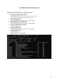

CKA Notes
•
102 pages
102 pages
Accessibility mode
Download document
Exit full screen
CKA Notes PDF
Scanning for viruses…
Go to previous page of document
Go to next page of document
Current page
1
/
Total pages
102

38
Zoom out
Zoom in
Zoom 100%
100%
125%
150%
200%
400%
800%
Enter full screen. An accessible version of the document is available in full screen mode.

![1 Certified Kubernetes Administrator CKA Domains & Competencies 1. Storage 10% • Understand storage classes, persistent volumes • Understand volume mode, access modes and reclaim policies for volumes • Understand persistent volume claims primitive • Know how to configure applications with persistent storage 2. Troubleshooting 30% • Evaluate cluster and node logging • Understand how to monitor applications • Manage container stdout & stderr logs • Troubleshoot application failure • Troubleshoot cluster component failure • Troubleshoot networking 3. Workloads & Scheduling 15% • Understand deployments and how to perform rolling update and rollbacks • Use ConfigMaps and Secrets to configure applications • Know how to scale applications • Understand the primitives used to create robust, self-healing, application deployments • Understand how resource limits can affect Pod scheduling • Awareness of manifest management and common templating tools 4. Cluster Architecture, Installation & Configuration 25% • Manage role-based access control (RBAC) • Use Kubeadm to install a basic cluster • Manage a highly-available Kubernetes cluster • Provision underlying infrastructure to deploy a Kubernetes cluster • Perform a version upgrade on a Kubernetes cluster using Kubeadm • Implement etcd backup and restore 5. Services & Networking 20% • Understand host networking configuration on the cluster nodes • Understand connectivity between Pods • Understand ClusterIP, NodePort, LoadBalancer service types and endpoints • Know how to use Ingress controllers and Ingress resources • Know how to configure and use CoreDNS • Choose an appropriate container network interface plugin](https://media.licdn.com/dms/image/v2/D561FAQHglq2tuTf6JQ/feedshare-document-images_1920/B56ZQ55DkCH0Ac-/2/1736138092632?e=1736985600&v=beta&t=hDyEEYaver6czJg8fq3pXnj-AEq8NkkIcreq4aq0NRg)
![2 Contents KIND Cluster Installation .............................................................................................................. 8 Kind Installation in Windows WSL ...................................................................................................... 8 Creating a Single Node Cluster............................................................................................................ 8 Install Kubectl ...................................................................................................................................... 8 Deleting a Cluster in KIND ................................................................................................................... 8 Creating a Multinode Cluster .............................................................................................................. 9 Kubernetes Architecture ............................................................................................................ 10 Kubernetes Architecture ................................................................................................................... 10 Master Node V/s Worker Node ........................................................................................................ 10 Components of Master Node ........................................................................................................... 11 1. API Server .................................................................................................................................. 11 2. Scheduler .................................................................................................................................. 11 3. Controller Manager ................................................................................................................... 12 4. ETCD Server ............................................................................................................................... 12 5. Cloud Control Manager (Optional) ........................................................................................... 13 Components of Worker Node ........................................................................................................... 14 1. Kubelet ...................................................................................................................................... 14 2. Kube-Proxy ................................................................................................................................ 15 3. Container Runtime .................................................................................................................... 16 Workloads in Kubernetes ........................................................................................................... 17 1. Pods ........................................................................................................................................... 17 2. Static Pods ................................................................................................................................. 17 3. ReplicationController ................................................................................................................ 17 4. ReplicaSet .................................................................................................................................. 17 5. Deployments ............................................................................................................................. 17 6. StatefulSets ............................................................................................................................... 18 7. DeamonSet ................................................................................................................................ 18 8. Jobs ........................................................................................................................................... 18 9. Cronjobs .................................................................................................................................... 18 ConfigMap and Secrets .............................................................................................................. 20 1. ConfigMap ................................................................................................................................. 20 2. Secrets ....................................................................................................................................... 21](https://media.licdn.com/dms/image/v2/D561FAQHglq2tuTf6JQ/feedshare-document-images_1920/B56ZQ55DkCH0Ac-/3/1736138092632?e=1736985600&v=beta&t=qEg0qOY7D9xJj0LPaRoxyPQJ2lD66f64ngdt2yFxIlo)
![3 Services ..................................................................................................................................... 22 1. NodePort ................................................................................................................................... 22 2. ClusterIP .................................................................................................................................... 23 3. LoadBalancer ............................................................................................................................. 24 4. ExternalName............................................................................................................................ 25 Ingress and Ingress Controller .................................................................................................... 26 1. Ingress ....................................................................................................................................... 26 2. Ingress Controller ...................................................................................................................... 28 Project: Deploy a Flask application with and without Ingress ...................................................... 29 1. Create Image pull secret from private Docker registry ............................................................. 29 2. Create a Service of type ClusterIP ............................................................................................. 29 3. Create Deployment ................................................................................................................... 30 4. Check weather service is able to communicate with pod ........................................................ 30 5. Create an Ingress resource ....................................................................................................... 31 6. Create an Ingress Controller ..................................................................................................... 31 7. Using the curl command, map an IP address to the host which is specified in Ingress ........... 33 Taints, Toleration and Node Affinity ........................................................................................... 34 1. Taints ......................................................................................................................................... 34 2. Toleration .................................................................................................................................. 34 3. NodeSelector............................................................................................................................. 36 4. NodeAffinity .............................................................................................................................. 36 Install Metrics Server in a Kubernetes Cluster ............................................................................. 37 Steps to install the Metrics Server in a Kubernetes cluster .............................................................. 37 Resources, Requests and Limits .................................................................................................. 38 1. Resource.................................................................................................................................... 38 2. Requests .................................................................................................................................... 38 3. Limits ......................................................................................................................................... 38 4. CPU Units .................................................................................................................................. 39 5. Memory Units ........................................................................................................................... 39 6. Summary of Common Units ...................................................................................................... 39 Kubernetes Autoscaling ............................................................................................................. 40 Autoscaling types .............................................................................................................................. 40 Horizontal Vs Vertical Autoscaling .................................................................................................... 40 Horizontal Pod Autoscaling (HPA) Practical ...................................................................................... 41](https://media.licdn.com/dms/image/v2/D561FAQHglq2tuTf6JQ/feedshare-document-images_1920/B56ZQ55DkCH0Ac-/4/1736138092632?e=1736985600&v=beta&t=5V80q9NwN9W_yb3ORGe7jsbJnIOQsFAbsYOqULppUkw)
![4 Health Probes in Kubernetes ...................................................................................................... 45 1. Startup Probe ............................................................................................................................ 45 2. Readiness Probe ........................................................................................................................ 45 3. Liveness Probe .......................................................................................................................... 46 Role Based Access Control (RBAC) in Kubernetes: ....................................................................... 47 Role-Based Access Control (RBAC) .................................................................................................... 47 Role ................................................................................................................................................... 47 ClusterRole ........................................................................................................................................ 47 RoleBinding ....................................................................................................................................... 47 ClusterRoleBinding ............................................................................................................................ 47 How RBAC Works? ............................................................................................................................ 47 Use Case Scenarios ........................................................................................................................... 47 Steps to Creating Users in Kubernetes with RBAC ............................................................................ 48 1. Create a Client Certificate for the User ..................................................................................... 48 2. Create a Kubeconfig File for the User ....................................................................................... 48 3. Create a Role/clusterRole ......................................................................................................... 48 4. Crate a RoleBinding/ClusterRoleBinding .................................................................................. 48 5. Switch to the Vishal User .......................................................................................................... 48 Role and Role Binding ................................................................................................................ 52 Cluster Role and Cluster Role Binding ......................................................................................... 56 Service Account ......................................................................................................................... 57 Network Policies in Kubernetes .................................................................................................. 59 1. CNI (Container Network Interface) ........................................................................................... 59 2. Network Policy .......................................................................................................................... 59 Docker Storage .......................................................................................................................... 60 1. Storage Driver ........................................................................................................................... 60 2. Volume ...................................................................................................................................... 60 3. Volume Drivers .......................................................................................................................... 60 Kubernetes Storage.................................................................................................................... 61 1. Storage class.............................................................................................................................. 61 2. Persistent Volume ..................................................................................................................... 62 3. Persistent Volume claim ........................................................................................................... 62 Access Modes .................................................................................................................................... 62 Reclaim Policies ................................................................................................................................. 63](https://media.licdn.com/dms/image/v2/D561FAQHglq2tuTf6JQ/feedshare-document-images_1920/B56ZQ55DkCH0Ac-/5/1736138092632?e=1736985600&v=beta&t=zBcfgWno5l3e9UQACk_5pPAzhBxktQgPxNYysVp6nUk)
![5 DNS in Kubernetes ..................................................................................................................... 64 1. CodeDNS ................................................................................................................................... 65 2. KubeDNS ................................................................................................................................... 65 Configure self-managed Multinode cluster using Kubeadm utility (On-premises/Cloud)............... 66 1. Create 3 Virtual Machines using Virtual Box (Ubuntu-22.04.3) ................................................ 67 2. Open the require ports in each node ........................................................................................ 69 3. Disable the SWAP on each node using the below commands .................................................. 70 4. Update Kernel Parameters ........................................................................................................ 70 5. Install container runtime .......................................................................................................... 71 6. Install runc ................................................................................................................................. 72 7. Install CNI plugin ....................................................................................................................... 72 8. Install kubeadm, kubelet and kubectl ....................................................................................... 72 9. Configure ‘crictl’ client to work with containerd ...................................................................... 73 10. Initialize control plane .......................................................................................................... 73 11. Prepare kubeconfig ............................................................................................................... 73 12. Install calico CNI .................................................................................................................... 74 13. Join the worker nodes to Master .......................................................................................... 74 14. Notes ..................................................................................................................................... 75 Upgrade Kubernetes Multi Node Cluster using Kubeadm ............................................................ 76 Upgrade Control Plane Nodes........................................................................................................... 77 1. Prerequisites ............................................................................................................................. 77 2. Determine which version to upgrade to ................................................................................... 77 3. Upgrade kubeadm..................................................................................................................... 78 4. Verify the upgrade plan ............................................................................................................ 79 5. Execute the upgrade (This will Upgrade the control plane components) ................................ 79 6. Drain the Nodes before upgrading kubelet and kubectl .......................................................... 80 7. Upgrade kubelet and kubectl .................................................................................................... 80 8. Restart the Kublet ..................................................................................................................... 80 9. Uncordon the MasterNode ....................................................................................................... 81 Upgrade worker nodes ..................................................................................................................... 82 1. Prerequisites ............................................................................................................................. 82 2. Upgrade kubeadm..................................................................................................................... 82 3. Upgrades the local kubelet configuration................................................................................. 82 4. Drain the WorkerNode 1 from MasterNode ............................................................................. 82 5. Upgrade kubelet and kubectl .................................................................................................... 82 6. Restart the Kublet ..................................................................................................................... 82](https://media.licdn.com/dms/image/v2/D561FAQHglq2tuTf6JQ/feedshare-document-images_1920/B56ZQ55DkCH0Ac-/6/1736138092632?e=1736985600&v=beta&t=86xgx1FE8ZksyzP05B26qNPNwhHe-rHysfJVZ1cHvls)
![6 7. Uncordon the MasterNode ....................................................................................................... 82 ETCD Backup and Restore ........................................................................................................... 83 1. Install this ‘etcdctl’ client utility ................................................................................................ 84 2. Take Snapshot using etcdctl...................................................................................................... 85 3. Restore the Snapshot using etcdctl .......................................................................................... 86 Kubernetes logging and Monitoring ............................................................................................ 87 Logging in Kubernetes ....................................................................................................................... 87 1. Accessing Logs from Pods ......................................................................................................... 87 2. Streaming Logs in Real-Time ..................................................................................................... 87 3. Getting Logs from All Pods in a Namespace ............................................................................. 87 4. Cluster Component Logs ........................................................................................................... 87 Centralized Logging Solutions ........................................................................................................... 88 1. ELK Stack (Elasticsearch, Logstash, Kibana) .............................................................................. 88 2. Fluentd and Fluent Bit ............................................................................................................... 88 3. Promtail and Loki (Grafana Stack)............................................................................................. 88 Monitoring in Kubernetes ................................................................................................................. 89 1. Metrics Provided by Metrics Server .......................................................................................... 89 2. Limitations of Metrics Server .................................................................................................... 89 3. Commands to Use with Metrics Server .................................................................................... 89 4. Use Cases for Metrics Server .................................................................................................... 91 5. Prometheus ............................................................................................................................... 91 6. Grafana...................................................................................................................................... 92 Application Failure Troubleshooting ........................................................................................... 93 ImagePullBackoff .............................................................................................................................. 93 CrashLoopBackOff ............................................................................................................................. 93 Pods not schedulable ........................................................................................................................ 94 Imperative Methods and Advance kubectl commands ................................................................ 95 1. Commands for dry run and to create a yaml file ...................................................................... 95 2. Commands for Creating Resources ........................................................................................... 95 3. Commands for Updating Resource ........................................................................................... 95 4. Commands for Managing Configurations ................................................................................. 95 5. Commands for viewing History ................................................................................................. 95 6. Commands for Taints and Tolerations ...................................................................................... 96 7. Commands for Node and Cluster Operations ........................................................................... 96 8. Commands for Port Forwarding and Proxy............................................................................... 96 9. Executing Commands in a Pod .................................................................................................. 96](https://media.licdn.com/dms/image/v2/D561FAQHglq2tuTf6JQ/feedshare-document-images_1920/B56ZQ55DkCH0Ac-/7/1736138092632?e=1736985600&v=beta&t=bCR5BtNE-Xvkoj4LoDFcfIK1ErxlWurZdTcrCRgj17s)
![7 10. Commands for Managing Cluster Resources ........................................................................ 97 11. Miscellaneous Commands .................................................................................................... 97 12. Backup and Restore .............................................................................................................. 97 13. Command to check the username ........................................................................................ 97 14. Command to check the user access control ......................................................................... 97 15. Command to count the Number of running pods or any workload within the cluster ........ 98 JSONPath Expressions ................................................................................................................ 99 Kubectl supports JSONPath template ............................................................................................... 99 Basic Syntax of JSONPath .................................................................................................................. 99 Examples using kubectl and JSONPath expressions ......................................................................... 99 Using JSONPath in Kubernetes ....................................................................................................... 100 Advanced JSONPath Features ......................................................................................................... 101 JSONPath Operators and Functions ................................................................................................ 101](https://media.licdn.com/dms/image/v2/D561FAQHglq2tuTf6JQ/feedshare-document-images_1920/B56ZQ55DkCH0Ac-/8/1736138092632?e=1736985600&v=beta&t=u5MSoZ-iVxVOq759PTC2n8Vgs-63jKYaZbyU8oNh07o)


![10 Kubernetes Architecture Kubernetes Architecture Master Node V/s Worker Node Role of Master Node: The Master Node is the brain of the Kubernetes cluster. It manages the cluster's overall state, ensuring that the desired state (as defined by the user) matches the actual state of the cluster. The master node components take care of all the operational and administrative tasks. Role of Worker Node: Worker Nodes are the machines where the actual application workloads (pods) run. They are responsible for running the containers and ensuring that the application remains functional.](https://media.licdn.com/dms/image/v2/D561FAQHglq2tuTf6JQ/feedshare-document-images_1920/B56ZQ55DkCH0Ac-/11/1736138092632?e=1736985600&v=beta&t=lVL7Sd1Z4i10z_8woM_S2gm-C63XP5fob_QNbkKe_qQ)
![11 Components of Master Node 1. API Server The Kubernetes API server is a component of the Kubernetes control plane that exposes the Kubernetes API, which is used by all other components of Kubernetes (such as kubectl, the CLI tool) to interact with the cluster. It acts as the front end for the Kubernetes control plane and client interacts with the cluster using ApiServer. It responsible for validating and processing API requests, maintaining the desired state of the cluster, and handling API resources such as pods, services, replication controllers, and others. 2. Scheduler The Scheduler in Kubernetes is a component responsible for scheduling workloads (such as pods) onto nodes in the cluster. It watches for newly created pods with no assigned node, selects an appropriate node for each pod, and then binds the pod to that node. The scheduler considers factors such as resource requirements, hardware/software constraints, affinity and anti-affinity specifications, data locality, and other policies defined by the user or cluster administrator when making scheduling decisions.](https://media.licdn.com/dms/image/v2/D561FAQHglq2tuTf6JQ/feedshare-document-images_1920/B56ZQ55DkCH0Ac-/12/1736138092632?e=1736985600&v=beta&t=BiAqnsaMau6_og0WqVh5Lz5dtgSuJMYFjDmrV_CuAtM)
![12 3. Controller Manager The Controller Manager in Kubernetes is a component of the control plane that manages different types of controllers to regulate the state of the cluster and perform cluster-wide tasks. Each controller in the Controller Manager is responsible for managing a specific aspect of the cluster's desired state, such as ReplicaSetController, DeploymentController, NamespaceController, and others. These controllers continuously work to ensure that the current state of the cluster matches the desired state specified by users or applications. They monitor the cluster state through the Kubernetes API server, detect any differences between the current and desired states, and take corrective actions to reconcile them, such as creating or deleting resources as needed. 4. ETCD Server Etcd is a distributed key-value storage that is used as the primary datastore in Kubernetes for storing cluster state and configuration information. It is a critical component of the Kubernetes control plane and is responsible for storing information such as cluster configuration, the state of all Kubernetes objects (such as pods, services, and replication controllers), and information about nodes in the cluster. Etcd ensures consistency and reliability by using a distributed consensus algorithm to replicate data across multiple nodes in the etcd cluster.](https://media.licdn.com/dms/image/v2/D561FAQHglq2tuTf6JQ/feedshare-document-images_1920/B56ZQ55DkCH0Ac-/13/1736138092632?e=1736985600&v=beta&t=L7Th-6grbcleO31euLImEzPQV6ezJCYooCDZAELJM98)
![13 5. Cloud Control Manager (Optional) The "Cloud Control Manager" is a component in the Kubernetes ecosystem that is part of the Cloud Provider Interface (CPI). It is responsible for managing interactions between Kubernetes and the underlying cloud provider's services and resources. The Cloud Control Manager facilitates functionalities such as: 1. Node management: It interacts with the cloud provider's APIs to manage the lifecycle of nodes in the cluster, including creating, deleting, and updating nodes 2. Load balancer management: It manages the creation and configuration of load balancers provided by the cloud provider for Kubernetes services. 3. Volume management: It handles the provisioning and management of storage volumes (e.g., EBS volumes on AWS, persistent disks on GCP) used by Kubernetes pods. 4. Networking: It manages the networking configuration, including setting up routes, load balancers, and firewall rules, to ensure that pods can communicate with each other and with external services. The Cloud Control Manager abstracts the cloud-specific details from the core Kubernetes components, allowing Kubernetes to be used across different cloud providers without requiring changes to the core Kubernetes codebase.](https://media.licdn.com/dms/image/v2/D561FAQHglq2tuTf6JQ/feedshare-document-images_1920/B56ZQ55DkCH0Ac-/14/1736138092632?e=1736985600&v=beta&t=1ef-qIiG-edU73a9U6ASqDBir7YF55hqBHyNyqM9PEI)
![14 Components of Worker Node 1. Kubelet In Kubernetes, Kubelet is the primary node agent that runs on each node in the cluster. It is responsible for managing the containers running on the node and ensuring that they are healthy and running as expected. Some of the key responsibilities of Kubelet include: 1. Pod Lifecycle Management: Kubelet is responsible for starting, stopping, and maintaining containers within a pod as directed by the Kubernetes API server. 2. Node Monitoring: Kubelet monitors the health of the node and reports back to the Kubernetes control plane. If the node becomes unhealthy, the control plane can take corrective actions, such as rescheduling pods to other healthy nodes. 3. Resource Management: Kubelet manages the node's resources (CPU, memory, disk, etc.) and enforces resource limits and requests specified in pod configurations. 4. Networking: Kubelet manages the network setup for pods on the node, including setting up networking rules, IP addresses, and ensuring that pods can communicate with each other and the outside world. 5. Volume Management: Kubelet manages pod volumes, including mounting and unmounting volumes as specified in the pod configuration. Overall, Kubelet plays a crucial role in ensuring that pods are running correctly on each node in the Kubernetes cluster and that the cluster remains healthy and operational.](https://media.licdn.com/dms/image/v2/D561FAQHglq2tuTf6JQ/feedshare-document-images_1920/B56ZQ55DkCH0Ac-/15/1736138092632?e=1736985600&v=beta&t=e4nO-srqEJcp44TU9lzmoQr0Njs0HC2SXUMRWWIL47Y)
![15 2. Kube-Proxy In Kubernetes, kube-proxy is a network proxy that runs on each node in the cluster. It is responsible for implementing part of the Kubernetes Service concept, which enables network communication to your Pods from network clients inside or outside of your cluster. kube-proxy maintains network rules on each node. These network rules allow network communication to be forwarded to the appropriate Pod based on IP address and port number. kube-proxy operates at both the TCP and UDP levels. There are several modes in which kube-proxy can operate, including: 1. User space mode: In this mode, kube-proxy opens a port on the node's IP address. When traffic is received on this port, kube-proxy reads the destination IP address and port from the packet and forwards it to the appropriate Pod. This mode is relatively simple but can be inefficient for high traffic loads. 2. iptables mode: In this mode, kube-proxy installs iptables rules on the node to forward traffic to the appropriate Pod. This mode is more efficient than user space mode and is the default mode for kube-proxy. 3. IPVS mode: IPVS (IP Virtual Server) is an advanced method of load balancing in the Linux kernel. In this mode, kube-proxy uses IPVS to perform load balancing for Services with type=LoadBalancer or type=NodePort. This mode can provide better performance and scalability compared to iptables mode. Overall, kube-proxy plays a critical role in enabling network communication to your Pods in a Kubernetes cluster and is essential for the functioning of Kubernetes Services.](https://media.licdn.com/dms/image/v2/D561FAQHglq2tuTf6JQ/feedshare-document-images_1920/B56ZQ55DkCH0Ac-/16/1736138092632?e=1736985600&v=beta&t=2jP4zW-QSLCdLoAcI2s2GGZoesVnAGFU5UHLsghcC1I)
![16 3. Container Runtime In Kubernetes, a container runtime is the software responsible for running containers. It is an essential component of the Kubernetes architecture because Kubernetes itself does not run containers directly; instead, it relies on a container runtime to do so. The container runtime is responsible for: 1. Pulling container images from a container registry (e.g., Docker Hub, Azure Container Registry). 2. Creating and managing container lifecycle (start, stop, pause, delete). 3. Managing container networking and storage. 4. Providing container isolation and resource constraints. Some popular container runtimes used with Kubernetes include: 1. Docker: Docker was the original default container runtime for Kubernetes. It provides a comprehensive set of tools for building, managing, and running containers. 2. Containerd: Containerd is an industry-standard core container runtime that provides a lightweight and reliable platform for managing containers. Post version v1.24 containerd is a default container runtime for Kubernetes. 3. CRI-O: CRI-O is an implementation of the Kubernetes Container Runtime Interface (CRI) that is optimized for Kubernetes. It provides a minimalistic runtime focused on running containers according to the Kubernetes specifications. 4. rkt (pronounced "rocket"): rkt is a container runtime developed by CoreOS that focuses on security, simplicity, and composability. It is designed to be compatible with the Kubernetes CRI. The choice of container runtime can impact factors such as performance, security, and manageability of your Kubernetes clusters.](https://media.licdn.com/dms/image/v2/D561FAQHglq2tuTf6JQ/feedshare-document-images_1920/B56ZQ55DkCH0Ac-/17/1736138092632?e=1736985600&v=beta&t=AzvCpuB-h_PnTYIpSjrJ6PnAo4E4O9UI-kr79yAhu8Y)
![17 Workloads in Kubernetes 1. Pods Pods are the smallest deployable units of computing that you can create and manage in Kubernetes. A Pod (as in a pod of whales or pea pod) is a group of one or more containers, with shared storage and network resources, and a specification for how to run the containers. A Pod's contents are always co- located and co-scheduled, and run in a shared context. Pods that run a single container: The "one-container-per-Pod" model is the most common Kubernetes use case; in this case, you can think of a Pod as a wrapper around a single container; Kubernetes manages Pods rather than managing the containers directly. Pods that run multiple containers that need to work together: A Pod can encapsulate an application composed of multiple co-located containers that are tightly coupled and need to share resources. These co-located containers form a single cohesive unit. Multi Container includes initcontainer and sidecar/helper container. 2. Static Pods Static Pods are special types of pods managed directly by the kubelet on each node rather than through the Kubernetes API server. Key Characteristics of Static Pods: ➢ Not Managed by the Scheduler: Unlike deployments or replicasets, the Kubernetes scheduler does not manage static pods. ➢ Defined on the Node: Configuration files for static pods are placed directly on the node's file system, and the kubelet watches these files. ➢ Some examples of static pods are: ApiServer, Kube-scheduler, controller-manager, ETCD etc 3. ReplicationController ReplicationController was one of the original Kubernetes controllers and is now considered deprecated in favour of ReplicaSet. 4. ReplicaSet A ReplicaSet's purpose is to maintain a stable set of replica Pods running at any given time. As such, it is often used to guarantee the availability of a specified number of identical Pods. ReplicaSet is the newer version of ReplicationController and was introduced in Kubernetes version 1.2 as part of the move to the apps/v1 API group. Primarily used by Deployments to manage the underlying pods. Direct use of ReplicaSets is uncommon, as Deployments provide additional features like rolling updates. 5. Deployments A Deployment provides declarative updates for Pods and ReplicaSets. You describe a desired state in a Deployment, and the Deployment Controller changes the actual state to the desired state at a controlled rate. You can define Deployments to create new ReplicaSets, or to remove existing Deployments and adopt all their resources with new Deployments.](https://media.licdn.com/dms/image/v2/D561FAQHglq2tuTf6JQ/feedshare-document-images_1920/B56ZQ55DkCH0Ac-/18/1736138092632?e=1736985600&v=beta&t=rtOOvUIzJgibZxVcMiBFV7KVTbcMFpJ5qXKWkzcZma0)
![18 6. StatefulSets StatefulSet is the workload API object used to manage stateful applications. Manages the deployment and scaling of a set of Pods, and provides guarantees about the ordering and uniqueness of these Pods. Like a Deployment, a StatefulSet manages Pods that are based on an identical container spec. Unlike a Deployment, a StatefulSet maintains a sticky identity for each of its Pods. These pods are created from the same spec, but are not interchangeable: each has a persistent identifier that it maintains across any rescheduling. If you want to use storage volumes to provide persistence for your workload, you can use a StatefulSet as part of the solution. Although individual Pods in a StatefulSet are susceptible to failure, the persistent Pod identifiers make it easier to match existing volumes to the new Pods that replace any that have failed 7. DeamonSet DeamonSet ensures that the number of replicas is equal to number of nodes and each node has one running replica at a time. If you create a deamonset in a cluster of 5 nodes, then 5 pods will be created. It is used for 1. Monitoring Agents 2. Logging events 3. Networking CNIs 8. Jobs A Job creates one or more Pods and will continue to retry execution of the Pods until a specified number of them successfully terminate. As pods successfully complete, the Job tracks the successful completions. When a specified number of successful completions is reached, the task (ie, Job) is complete. Deleting a Job will clean up the Pods it created. Suspending a Job will delete its active Pods until the Job is resumed again. A simple case is to create one Job object in order to reliably run one Pod to completion. The Job object will start a new Pod if the first Pod fails or is deleted (for example due to a node hardware failure or a node reboot). You can also use a Job to run multiple Pods in parallel. 9. Cronjobs A CronJob creates Jobs on a repeating schedule. CronJob is meant for performing regular scheduled actions such as backups, report generation, and so on. One CronJob object is like one line of a crontab (cron table) file on a Unix system. It runs a Job periodically on a given schedule, written in Cron format. CronJobs have limitations and idiosyncrasies. For example, in certain circumstances, a single CronJob can create multiple concurrent Jobs.](https://media.licdn.com/dms/image/v2/D561FAQHglq2tuTf6JQ/feedshare-document-images_1920/B56ZQ55DkCH0Ac-/19/1736138092632?e=1736985600&v=beta&t=5NjyJAEN_c1UV6wyRvRoBcC14jXvWxwGI1Z1mC3LXjc)

![20 ConfigMap and Secrets 1. ConfigMap A ConfigMap is an API object used to store non-confidential data in key-value pairs. Pods can consume ConfigMaps as environment variables, command-line arguments, or as configuration files in a volume. A ConfigMap allows you to decouple environment-specific configuration from your container images, so that your applications are easily portable. ➢ When your manifest grows it becomes difficult to manage multiple env vars ➢ You can take this out of the manifest and store as a config map object in the key-value pair ➢ Then you can inject that config map into the pod ➢ You can reuse the same config map into multiple pods Command to create a configmap ➔ kubectl create cm <configmapname> --from-literal=color=blue](https://media.licdn.com/dms/image/v2/D561FAQHglq2tuTf6JQ/feedshare-document-images_1920/B56ZQ55DkCH0Ac-/21/1736138092632?e=1736985600&v=beta&t=-Kj__5vfTUTWYbSBLxkEgFrLIzcK-e9CZ0gYJQMQlu4)
![21 2. Secrets A Secret is an object that contains a small amount of sensitive data such as a password, a token, or a key. Such information might otherwise be put in a Pod specification or in a container image. Using a Secret means that you don't need to include confidential data in your application code. Because Secrets can be created independently of the Pods that use them, there is less risk of the Secret (and its data) being exposed during the workflow of creating, viewing, and editing Pods. Kubernetes, and applications that run in your cluster, can also take additional precautions with Secrets, such as avoiding writing sensitive data to non-volatile storage. Secrets are similar to ConfigMaps but are specifically intended to hold confidential data. Create Secret for Docker Credentials using imperative command ➔ kubectl create secret docker-registry dockercred-secret --docker- server=https://index.docker.io/v1/ --docker-username=vishalkurane --docker- password=<Password> --docker-email=<email>](https://media.licdn.com/dms/image/v2/D561FAQHglq2tuTf6JQ/feedshare-document-images_1920/B56ZQ55DkCH0Ac-/22/1736138092632?e=1736985600&v=beta&t=gNyzCBJHoBuBYQO66k-0oKHQNU7myeWglpZrNgxqQXc)
![22 Services 1. NodePort To access the application externally on a particular Node Port • Node Port: Node Port is a port of service which is exposed to the external world. Range of Nodeport- 30000 – 32767 • Internal Service Port: Service will be expose internally within the cluster through internal service port. (e.g.: 80) • Target Port: Target port is a port on which the application is listening. (e.g.: 80) Explanation: • NodePort exposes the service on a specific port on each node in the cluster. • This allows external traffic to access the service by sending requests to the <NodeIP>:<NodePort>. • The port range for NodePort services is typically between 30000-32767. Use Case Scenario: • Direct External Access: If you want to expose a service to be accessible from outside the cluster but don't have a load balancer, you can use NodePort. For example, if you have a web application running in a Kubernetes cluster and you want to test it externally, you might use NodePort to expose it.](https://media.licdn.com/dms/image/v2/D561FAQHglq2tuTf6JQ/feedshare-document-images_1920/B56ZQ55DkCH0Ac-/23/1736138092632?e=1736985600&v=beta&t=7GpnkHE-X8TisDYhfMYdJW4yT2cRL8FiDlvixv-3WgI)
![23 2. ClusterIP Used to expose and access the service internally within the cluster. Explanation: • ClusterIP is the default service type in Kubernetes. • It makes the service accessible only within the Kubernetes cluster, using an internal IP address. • Other services within the cluster can use this IP to communicate with the service. Use Case Scenario: • Internal Microservices Communication: If you have a set of microservices within a Kubernetes cluster that need to communicate with each other (e.g., a backend service accessing a database service), you would use a ClusterIP service. This keeps the communication internal and secure without exposing the services externally.](https://media.licdn.com/dms/image/v2/D561FAQHglq2tuTf6JQ/feedshare-document-images_1920/B56ZQ55DkCH0Ac-/24/1736138092632?e=1736985600&v=beta&t=jKrAN5tckZlhFdKoEJED4uU0VvWgp3xBZkT_MowVFw8)
![24 3. LoadBalancer Your loadbalancer service will act as nodeport if you are not using any managed cloud Kubernetes such as GKE, AKS, EKS etc. In a managed cloud environment, Kubernetes creates a load balancer within the cloud project, which redirects the traffic to the Kubernetes Loadbalancer service. Explanation: • LoadBalancer creates an external load balancer (if supported by the cloud provider) that forwards traffic to your service. • This is the easiest way to expose a service to the internet when running Kubernetes on a cloud provider like AWS, Azure, or GCP. • It automatically provisions a load balancer and assigns a public IP to your service. Use Case Scenario: • Publicly Accessible Applications: If you're deploying a production application that needs to be accessible to the public, like a web application or API, you would use a LoadBalancer service. For example, a public-facing e-commerce website running in Kubernetes could be exposed using a LoadBalancer service.](https://media.licdn.com/dms/image/v2/D561FAQHglq2tuTf6JQ/feedshare-document-images_1920/B56ZQ55DkCH0Ac-/25/1736138092632?e=1736985600&v=beta&t=CLIu8bS2KJ1pqtWkw3rdfoAaYv4zG6Os5ewLPSMOp8s)
![25 4. ExternalName Explanation: • ExternalName maps a Kubernetes service to a DNS name outside the cluster. • Instead of proxying traffic, it simply returns a CNAME record with the value of the external name specified. • No IP is assigned to the service, and no proxying of traffic is involved. Use Case Scenario: • External Service Aliasing: If you want to refer to an external service using a consistent name within your Kubernetes cluster, you can use ExternalName. For example, if your application needs to connect to a third-party API like api.example.com, you can create a Kubernetes service with an ExternalName that maps to api.example.com. This way, internal applications can use the Kubernetes service name, and any changes to the external service's URL can be managed centrally.](https://media.licdn.com/dms/image/v2/D561FAQHglq2tuTf6JQ/feedshare-document-images_1920/B56ZQ55DkCH0Ac-/26/1736138092632?e=1736985600&v=beta&t=vp2-OmpFQXz-ymH_YSfVsFcFTsTV9Qdku0Ah80VSGi8)
![26 Ingress and Ingress Controller 1. Ingress Ingress exposes HTTP and HTTPS routes from outside the cluster to services within the cluster. Traffic routing is controlled by rules defined on the Ingress resource. • In Kubernetes, Ingress is an API object that manages external access to services within a cluster, typically HTTP and HTTPS routes. • Ingress provides a way to define rules for routing external HTTP(S) traffic to different services within the cluster based on the request's path or host. • Ingress can also provide other features like SSL termination, name-based virtual hosting, and load balancing. Components of Ingress: • Ingress Resource: The YAML/JSON configuration file where you define the routing rules for directing external traffic to the services. • Ingress Controller: The component that implements the Ingress resource. It watches the Ingress resources and updates its configuration to manage routing. Routing Rules: In Kubernetes Ingress, rules for routing external traffic to internal services can be defined in several ways. Below is a list of the most common methods: 1. Host-Based Routing • Routes traffic based on the Host header in the incoming request. • Useful for hosting multiple applications on the same IP address but under different domain names or subdomains. 1. Path-Based Routing • Routes traffic based on the URL path in the incoming request. • Useful for directing different paths under the same domain to different services.](https://media.licdn.com/dms/image/v2/D561FAQHglq2tuTf6JQ/feedshare-document-images_1920/B56ZQ55DkCH0Ac-/27/1736138092632?e=1736985600&v=beta&t=WSXpH02chlKhzfXjwQfAeFLWuhUb_1bN2ryomwuz7RU)
![27 2. Path Type • Specifies how the Ingress controller should match the URL path with the request. • Kubernetes supports the following path Type values: o Prefix: Matches based on a URL path prefix. Requests are routed if the beginning of the path matches. o Exact: Matches the URL path exactly as specified. o ImplementationSpecific: Allows the Ingress controller to determine how the path should be matched. 3. Regex-Based Routing (Depending on Ingress Controller) • Some Ingress controllers support custom regex-based routing for more complex routing scenarios. • Useful for matching more complex URL patterns. 4. TLS/SSL Termination • You can define rules to handle HTTPS traffic, terminating SSL at the Ingress controller. • You provide a TLS certificate that the Ingress controller uses to serve HTTPS requests. 5. Default Backend • A default backend is a catch-all service for requests that do not match any specified Ingress rules. • Useful for handling invalid requests, providing custom 404 pages, or default routing behaviour. 6. Annotations for Custom Behaviour • Ingress resources can use annotations to define custom behaviours like URL rewriting, redirects, and more. • These are controller-specific and add flexibility for advanced use cases.](https://media.licdn.com/dms/image/v2/D561FAQHglq2tuTf6JQ/feedshare-document-images_1920/B56ZQ55DkCH0Ac-/28/1736138092632?e=1736985600&v=beta&t=zD8BKCHK-TUqIyAXazwSZiJvuiTFCUydOsPO2FpGeCA)
![28 2. Ingress Controller • The Ingress Controller is responsible for fulfilling the Ingress resource by configuring a load balancer or proxy to handle traffic according to the Ingress rules. • It runs as a pod in the Kubernetes cluster and watches for changes in Ingress resources, updating its configuration dynamically. • There are various Ingress Controllers available, such as NGINX Ingress Controller, Traefik, HAProxy, AWS ALB Ingress Controller, and others. How It Works: • When you create an Ingress resource, the Ingress Controller automatically configures itself to route traffic according to the rules specified. • It can manage tasks like: o Routing traffic based on URL paths or hostnames. o Terminating SSL/TLS traffic. o Performing load balancing. o Redirecting traffic (e.g., HTTP to HTTPS). Use Case Scenario Scenario: Imagine you're hosting multiple microservices in a Kubernetes cluster, each providing different functionalities of an e-commerce application—such as frontend, inventory, and payment. You want to expose these services to the public under a single domain name with different paths. • Without Ingress: o You might expose each service individually using a LoadBalancer service, leading to multiple public IPs, one for each service. o Users would need to remember different IP addresses or subdomains to access different parts of the application. • With Ingress: o You can define an Ingress resource that routes traffic based on paths: ▪ example.com/ -> frontend-service ▪ example.com/inventory -> inventory-service ▪ example.com/payment -> payment-service o This way, users access different services via the same domain but different paths, making the application more user-friendly. o You can also terminate SSL traffic at the Ingress level, providing HTTPS for all services with a single SSL certificate. Benefits of Using Ingress: • Consolidation: Centralized routing and SSL termination, reducing the need for multiple LoadBalancers. • Ease of Management: Simplifies managing access to multiple services with one or a few Ingress resources. • Cost Efficiency: Reduces cloud costs by minimizing the number of public IP addresses needed. • Enhanced Security: SSL termination and redirection rules help in enforcing secure communication protocols.](https://media.licdn.com/dms/image/v2/D561FAQHglq2tuTf6JQ/feedshare-document-images_1920/B56ZQ55DkCH0Ac-/29/1736138092632?e=1736985600&v=beta&t=QcaiadIebFWCTvRsgo8TQT31KcMiWkuR1qmrUkBFr7w)


![34 Taints, Toleration and Node Affinity 1. Taints: We provide taint on node. A taint marks a node with a specific characteristic, such as "gpu=true". By default, pods cannot be scheduled on tainted nodes unless they have a special permission called toleration. When a toleration on a pod matches with the taint on the node then only that pod will be scheduled on that node. 2. Toleration: We provide toleration on pod. Toleration allows a pod to say, "Hey, I can handle that taint. Schedule me anyway!" You define tolerations in the pod specification to let them bypass the taints. Effects of Taints and Tolerance 1. NoSchedule (Newer Pods) 2. PreferNoSchedue (No Guaranty) 3. NoExecution (Existing/Newer Pods) Taint a node using below command: ➔ kubectl taint nodes cka-mn-cluster-1-worker gpu=true:NoSchedule Remove taint using – at the end of the command: ➔ kubectl taint nodes cka-mn-cluster-1-worker gpu=true:NoSchedule- Taints applied at node level, Tolerations at pod level - This gives node ability to allow which pods to be scheduled on them. (Node centric approach)](https://media.licdn.com/dms/image/v2/D561FAQHglq2tuTf6JQ/feedshare-document-images_1920/B56ZQ55DkCH0Ac-/35/1736138092632?e=1736985600&v=beta&t=m2m3knQXLdaE6d2qq-3V1CSTSewkI8Cbi0GJ8LkHzOw)

![36 3. NodeSelector: Using NodeSelector will not guaranty that the pod will be scheduled on a particular desired node. This give pod ability to decide on which node it has to go. (Pod centric approach) 4. NodeAffinity: Node Affinity lets you define complex rules for where your pods can be scheduled based on node labels. Think of it as creating a wishlist for your pod's ideal home! Key Features: 1. Flexibility: Define precise conditions for pod placement. 2. Control: Decide where your pods can and cannot go with greater granularity. 3. Adaptability: Allow pods to stay on their nodes even if the labels change after scheduling. Properties of NodeAffinity 1. requiredDuringSchedulingIgnoredDuringExecution If the required condition is not satisfied with the node lables, the pods will not get scheduled. 2. preferredDuringSchedulingIgnoredDuringExecution If the required condition is not satisfied with the node lables, still the pods will get scheduled. (Note: It is always preferred to use Node Affinity (Labels) with Node Selector (Taints))](https://media.licdn.com/dms/image/v2/D561FAQHglq2tuTf6JQ/feedshare-document-images_1920/B56ZQ55DkCH0Ac-/37/1736138092632?e=1736985600&v=beta&t=cOtMnnrq81VI5z_F8FIXz5cSIdxlAQK0FFX2MjVfUUA)
![37 Install Metrics Server in a Kubernetes Cluster Steps to install the Metrics Server in a Kubernetes cluster 1. Download the Metrics Server YAML: kubectl apply -f https://github.com/kubernetes-sigs/metrics- server/releases/latest/download/components.yaml 2. Verify the Deployment: kubectl get deployment metrics-server -n kube-system 3. Edit the Metrics Server Deployment: kubectl edit deployment metrics-server -n kube-system 4. Add the --kubelet-insecure-tls Flag: - --kubelet-insecure-tls 5. Verify the Deployment: kubectl get deployment metrics-server -n kube-system 6. Test the Metrics Server: kubectl top nodes kubectl top pods --all-namespaces](https://media.licdn.com/dms/image/v2/D561FAQHglq2tuTf6JQ/feedshare-document-images_1920/B56ZQ55DkCH0Ac-/38/1736138092632?e=1736985600&v=beta&t=QGGbVtwZRxebzmXWMq4j6Paep8X3lScoYp7gyh6t1Ho)
![38 Resources, Requests and Limits 1. Resource • Resources in Kubernetes refer to the compute resources (primarily CPU and memory) that a container consumes. • Kubernetes allows you to define how much CPU and memory a container requires (requests) and the maximum it can use (limits). • These definitions help the Kubernetes scheduler make decisions on where to place pods based on the available resources in the cluster. 2. Requests • Minimum resource allocated to the respective work load. 200m -> 0.2 of 1 CPU • Requests specify the minimum amount of CPU and memory that a container needs to run. • Kubernetes uses requests to decide where to place a pod on a node. It guarantees that the container will always get at least the requested resources. • If a node doesn’t have enough resources to fulfill the request of a container, the pod won’t be scheduled on that node. 3. Limits • Maximum resource allocated to the respective work load. 500m -> 0.5 of 1 CPU • Limits define the maximum amount of CPU and memory a container is allowed to use. • If a container tries to use more resources than the limit, Kubernetes will throttle its CPU usage or, in the case of memory, kill the container (with an "OOMKilled" error) and restart it. • Limits protect your cluster from resource exhaustion by preventing a single container from monopolizing resources.](https://media.licdn.com/dms/image/v2/D561FAQHglq2tuTf6JQ/feedshare-document-images_1920/B56ZQ55DkCH0Ac-/39/1736138092632?e=1736985600&v=beta&t=DC3ZwN_hR0G7DUrdk61Kiy81GL-WdkgKW9nwTSNm_I8)
![39 4. CPU Units • CPU resources are measured in CPU cores. Kubernetes allows you to specify fractional or whole numbers of CPU cores. • 1 CPU in Kubernetes is equivalent to 1 vCPU/Core for cloud providers or 1 Hyperthread on a bare- metal Intel processor. • Unit: o m (millicores): ▪ The most common unit is millicores. ▪ 1000 millicores = 1 CPU core. ▪ This unit allows for fine-grained allocation of CPU resources. ▪ Example: 100m represents 100 millicores, which is 10% of a CPU core. o Whole Numbers: ▪ You can also specify CPU in whole numbers. ▪ Example: 1 represents 1 full CPU core. 5. Memory Units • Memory resources are measured in bytes. Kubernetes allows you to specify memory in multiples of bytes using standard suffixes. • Units: o Ki (kibibyte): 1 KiB = 1024 bytes o Mi (mebibyte): 1 MiB = 1024 KiB = 1,048,576 bytes o Gi (gibibyte): 1 GiB = 1024 MiB = 1,073,741,824 bytes o Ti (tebibyte): 1 TiB = 1024 GiB = 1,099,511,627,776 bytes o Pi (pebibyte): 1 PiB = 1024 TiB = 1,125,899,906,842,624 bytes o Ei (exbibyte): 1 EiB = 1024 PiB = 1,152,921,504,606,846,976 bytes 6. Summary of Common Units Resource Unit Description Example Value CPU m Millicores (1/1000 of a core) 500m (0.5 CPU core) CPU - Whole CPU cores 2 (2 CPU cores) Memory Ki Kibibytes (1024 bytes) 1024Ki (1 MiB) Memory Mi Mebibytes (1024 KiB) 256Mi (256 MiB) Memory Gi Gibibytes (1024 MiB) 1Gi (1 GiB) Considerations • CPU Requests and Limits: o Kubernetes schedules pods based on the requested CPU. o If the container uses more CPU than the limit, it will be throttled (limited in its CPU usage). • Memory Requests and Limits: o Kubernetes guarantees that the container will get the requested memory. o If a container tries to use more memory than the limit, it will be killed and potentially restarted with an "OOMKilled" (Out of Memory) status. o Defining CPU and memory resources with appropriate units ensures that your applications get the right amount of resources and helps in preventing resource contention in a Kubernetes cluster.](https://media.licdn.com/dms/image/v2/D561FAQHglq2tuTf6JQ/feedshare-document-images_1920/B56ZQ55DkCH0Ac-/40/1736138092632?e=1736985600&v=beta&t=NmFN6EBVaMxEmfaSSVFPR-1_7RK3frWXMnq3B0uoak0)


![45 Health Probes in Kubernetes Health Probes in Kubernetes: 1. Startup Probe – For slow/legacy applications The kubelet uses startup probes to know when a container application has started. If such a probe is configured, liveness and readiness probes do not start until it succeeds, making sure those probes don't interfere with the application startup. This can be used to adopt liveness checks on slow starting containers, avoiding them getting killed by the kubelet before they are up and running. Purpose: • The Startup Probe is designed to detect and handle applications that are slow to start, ensuring that they are not prematurely killed by the liveness probe or removed from the service's endpoints by the readiness probe. How It Works: • The Startup Probe is configured similarly to the liveness and readiness probes, using an HTTP GET request, a TCP socket, or an exec command to check the application’s health. • During the startup phase, Kubernetes will rely on the startup probe's success or failure to decide whether the container should be restarted. • Once the startup probe succeeds, it is disabled, and the liveness and readiness probes take over. 2. Readiness Probe – Ensure the application is ready Purpose: • The Readiness Probe is used to determine if a container is ready to start accepting traffic. If the readiness probe fails, Kubernetes will temporarily remove the pod from the service's load balancers, meaning it won’t receive any traffic until it passes the readiness check again. When to Use: • Use readiness probes to prevent traffic from being routed to containers that are not yet ready to serve requests (e.g., during startup or initialization). • They are critical for applications that take time to initialize, or that might need to temporarily reject traffic (e.g., during maintenance). Types of Readiness Probes: 2.1. Readiness command 2.2. Readiness HTTP request 2.3. TCP Readiness probe](https://media.licdn.com/dms/image/v2/D561FAQHglq2tuTf6JQ/feedshare-document-images_1920/B56ZQ55DkCH0Ac-/46/1736138092632?e=1736985600&v=beta&t=1jLo2qXKRZytjJEL-8_6i_K6n9deP1PwuQ07_sdCx38)
![46 3. Liveness Probe – Restarts the application if it fails Purpose: • The Liveness Probe is used to determine if a container is running. If the liveness probe fails, Kubernetes will kill the container, and it will be restarted according to the pod’s restart policy. When to Use: • Use liveness probes to detect and recover from situations where an application is stuck or dead (e.g., an application is in an infinite loop or deadlocked). • Liveness probes ensure that unhealthy containers are terminated and restarted, which is essential for maintaining availability. Types of Liveness Probes: 3.1. liveness command 3.2. liveness HTTP request 3.3. TCP liveness probe 3.4. gRPC liveness probe](https://media.licdn.com/dms/image/v2/D561FAQHglq2tuTf6JQ/feedshare-document-images_1920/B56ZQ55DkCH0Ac-/47/1736138092632?e=1736985600&v=beta&t=DKNCI8LDJoET_sjRlOXTpyd6kG4j7yY3JWT4IzXvZBU)
![47 Role Based Access Control (RBAC) in Kubernetes: Role-Based Access Control (RBAC) in Kubernetes is a mechanism used to regulate access to resources in a Kubernetes cluster. It provides fine-grained control over who can do what within the cluster, ensuring that users and applications have the appropriate permissions without compromising security. Role • A Role defines a set of permissions or rules that determine what actions can be performed on what resources. • Roles are namespace-specific, meaning they apply to resources within a specific namespace. ClusterRole • A ClusterRole is similar to a Role but applies cluster-wide, rather than to a specific namespace. It can also be used to grant access to non-namespaced resources like nodes and persistent volumes. RoleBinding • A RoleBinding grants the permissions defined in a Role to a user, group, or service account within a specific namespace. ClusterRoleBinding • A ClusterRoleBinding grants the permissions defined in a ClusterRole to a user, group, or service account across the entire cluster. How RBAC Works? RBAC works by associating users or service accounts with specific roles that define what actions they are permitted to take on various resources. These roles are then bound to the users or groups via RoleBindings or ClusterRoleBindings. Roles and RoleBindings are scoped to namespaces, providing control over resources within a specific namespace. ClusterRoles and ClusterRoleBindings provide cluster-wide permissions, including non-namespaced resources. Use Case Scenarios 1. Restricting Access to a Specific Namespace: You have multiple development teams working in a Kubernetes cluster, each with their own namespace. You can create Roles and RoleBindings to ensure that each team only has access to their own namespace. 2. Granular Control for Service Accounts: A microservice running in your cluster needs to read secrets and config maps but should not have permissions to delete them. You can create a Role with get permissions on secrets and config maps, and bind it to the service account used by the microservice. 3. Admin Access for Cluster Operators: You want to grant full cluster-wide administrative access to a cluster operator. You can create a ClusterRoleBinding that binds the cluster-admin ClusterRole to the operator's user account. 4. Read-Only Access for Auditors: An auditor needs to inspect the configuration and state of the cluster without making any changes. You can create a ClusterRole with read-only permissions and bind it to the auditor’s account using a ClusterRoleBinding.](https://media.licdn.com/dms/image/v2/D561FAQHglq2tuTf6JQ/feedshare-document-images_1920/B56ZQ55DkCH0Ac-/48/1736138092632?e=1736985600&v=beta&t=MOeCdOH8Mk_x7sFS5sAXTBZBBljX7uC6JhUvgXwvbJQ)
![48 Steps to Creating Users in Kubernetes with RBAC 1. Create a Client Certificate for the User # Generate a private key for vishal openssl genrsa -out vishal.key 2048 # Create a certificate signing request (CSR) for vishal openssl req -new -key vishal.key -out vishal.csr -subj "/CN=vishal/O=group1" # Sign the CSR with the Kubernetes CA to get the client certificate sudo openssl x509 -req -in vishal.csr -CA /etc/kubernetes/pki/ca.crt -CAkey /etc/kubernetes/pki/ca.key -CAcreateserial -out vishal.crt -days 365 2. Create a Kubeconfig File for the User kubectl config set-cluster kubernetes --certificate-authority=/etc/kubernetes/pki/ca.crt --embed- certs=true --server=https://<your-kubernetes-api-server> --kubeconfig=vishal.kubeconfig kubectl config set-credentials vishal --client-certificate=vishal.crt --client-key=vishal.key --embed- certs=true --kubeconfig=vishal.kubeconfig kubectl config set-context vishal-context --cluster=kubernetes --user=vishal -- kubeconfig=vishal.kubeconfig kubectl config use-context vishal-context --kubeconfig=vishal.kubeconfig 3. Create a Role/clusterRole 4. Crate a RoleBinding/ClusterRoleBinding 5. Switch to the Vishal User To use the new configuration, copy vishal.kubeconfig to ~/.kube/config (or set the KUBECONFIG environment variable to point to vishal.kubeconfig). export KUBECONFIG=/home/vishal/vishal.kubeconfig Now, User vishal can use kubectl to interact with the cluster within the permissions granted by the RBAC settings.](https://media.licdn.com/dms/image/v2/D561FAQHglq2tuTf6JQ/feedshare-document-images_1920/B56ZQ55DkCH0Ac-/49/1736138092632?e=1736985600&v=beta&t=jsIpQfEFHcQ5_oxilIkSvSLIE_cMoNNqKxHF1JhDGvo)


![59 Network Policies in Kubernetes 1. CNI (Container Network Interface) CNI stands for Container Network Interface. It's a standard for configuring network interfaces in Linux containers, used by container orchestrators like Kubernetes. CNI provides a framework for plugins to manage container networking, allowing different networking solutions to be easily integrated. CNI Plugins does not comes with Kubernetes installation so we need to install the CNI plugins externally. Below are some popular CNI plugins. 1. Antrea 2. Weave-net 3. Flannel and Kindnet (Doesn’t support Network Policies) 4. Calico 5. Cilium 6. Kube-router 7. Romana CNI is deployed as a Demon set. So CNI pod is running on each Node in Cluster. Refer: https://kubernetes.io/docs/tasks/administer-cluster/declare-network-policy/ 2. Network Policy Network policy allows you to control the Inbound and Outbound traffic to and from the cluster. For example, you can specify a deny-all network policy that restricts all incoming traffic to the cluster, or you can create an allow-network policy that will only allow certain services to be accessed by certain pods on a specific port. Document to install calico on your cluster https://docs.tigera.io/calico/latest/getting-started/kubernetes/kind](https://media.licdn.com/dms/image/v2/D561FAQHglq2tuTf6JQ/feedshare-document-images_1920/B56ZQ55DkCH0Ac-/60/1736138092632?e=1736985600&v=beta&t=IoG5mfNqUV9bA-S7jj4cJ3ssGTrAAps4mk-s0dZwY0s)
![60 Docker Storage Note: 1. Default Directory for Docker is “/var/lib/docker” at this directory all docker data is stored. 1. Storage Driver: It is responsible for writing data in the container and also stores layers with in container. The Docker storage driver is a component that manages how Docker handles the storage of container data, including images and volumes. Each storage driver uses different techniques to store and manage container data on the host filesystem, and the choice of driver can impact performance, efficiency, and compatibility with different file systems. a. Overlay2 b. Zfs c. Vfs 2. Volume: Docker volumes are a fundamental feature for managing persistent data in Docker containers. They provide a mechanism for containers to store data that persists beyond the lifecycle of the container itself. This is crucial for maintaining data integrity and consistency, especially for applications that require data to be stored independently of the container's lifecycle. A Docker bind mount is a type of volume that allows you to map a specific directory or file from the host filesystem directly into a container. This is useful when you need to provide the container with access to files or directories on the host, or when you want to share data between the host and the container. 3. Volume Drivers: It is responsible for making the data persistent. Docker Volume Driver is a plugin interface that allows Docker to interact with external storage systems or services. While Docker volumes are used to persist data generated by and used by Docker containers, the Volume Driver enables more advanced or specialized volume management by integrating with various storage backends. There are various volume drivers available, each designed to interact with specific types of storage systems. Some common examples include: • Local Driver: The default driver, which stores volumes on the local filesystem. • NFS Driver: Allows you to use NFS (Network File System) for storing volumes. • Cloud Providers: Drivers that integrate with cloud storage services like Amazon EBS, Google Cloud Storage, or Azure Blob Storage. • rexray: Integrates with storage services like Amazon EBS, EMC, or other SAN/NAS solutions.](https://media.licdn.com/dms/image/v2/D561FAQHglq2tuTf6JQ/feedshare-document-images_1920/B56ZQ55DkCH0Ac-/61/1736138092632?e=1736985600&v=beta&t=nRP0h7cIDrFWpm0_ya8gNL0knwhlpzpVBGvf8bN3bT4)
![61 Kubernetes Storage Note: 1. Default Directory for Kubernetes is “etc/kubernetes/” in Control plain Node. At this directory where all Kubernetes control plain components manifest, certificate and all other data is stored. 1. Storage class: StorageClass defines the type of storage available in a Kubernetes cluster. It specifies the storage characteristics and provides a way to dynamically provision persistent storage. A StorageClass allows you to abstract away the details of the underlying storage provider and define parameters like performance, replication, and more. Key Features: • Provisioning: Defines how storage is dynamically provisioned using a specific provisioner. For example, it can be used with cloud providers like AWS EBS, GCP Persistent Disks, or Azure Disks, or with on-premises solutions. • Parameters: Allows specifying parameters related to the storage backend, such as disk type, IOPS, replication factor, etc. • Reclaim Policy: Specifies what happens to the volume when the PersistentVolumeClaim (PVC) is deleted (e.g., delete the volume or retain it for manual cleanup).](https://media.licdn.com/dms/image/v2/D561FAQHglq2tuTf6JQ/feedshare-document-images_1920/B56ZQ55DkCH0Ac-/62/1736138092632?e=1736985600&v=beta&t=e0fekojASuQyl3Ar6-89C8g7qF0J-n1otGcVbR8e0oU)
![62 2. Persistent Volume: PersistentVolume (PV) is a piece of storage in the cluster that has been provisioned by an administrator or dynamically provisioned using a StorageClass. PVs are a representation of the physical storage resource in the cluster. Key Features: • Lifecycle: PVs exist independently of the pods that use them and can be reused or reclaimed as per the defined policies. • Attributes: Includes information about the storage capacity, access modes, and the storage class it belongs to. • Reclaim Policy: Defines what happens to the volume when it is released by a PVC (e.g., retain, delete, or recycle). 3. Persistent Volume claim: PersistentVolumeClaim (PVC) is a request for storage by a user or application. It is used to request a specific amount of storage with certain attributes (like access modes) from available PersistentVolumes. Key Features: • Request: Allows users to specify the amount of storage required and the access mode. • Binding: PVCs are bound to available PVs that match the requested criteria. If a suitable PV is found, it will be bound to the PVC. • Dynamic Provisioning: If no suitable PV is available, the PVC may trigger the creation of a new PV based on the StorageClass. In Kubernetes, Access Modes and Reclaim Policies are key attributes for managing PersistentVolumes (PVs) and PersistentVolumeClaims (PVCs). They define how storage resources are accessed and managed within the cluster. Access Modes Access Modes define how a PersistentVolume (PV) can be mounted and accessed by containers. They specify the level of access a pod has to the volume. Kubernetes supports the following access modes: 1. ReadWriteOnce (RWO): o Description: The volume can be mounted as read-write by a single node. o Usage: This is useful for applications that need to write data and can operate from a single node, such as a single-instance database or an application server. 2. ReadOnlyMany (ROX): o Description: The volume can be mounted as read-only by many nodes. o Usage: Suitable for scenarios where multiple nodes need to read data from the volume but not write to it, such as serving static content or configuration files. 3. ReadWriteMany (RWX): o Description: The volume can be mounted as read-write by many nodes simultaneously.](https://media.licdn.com/dms/image/v2/D561FAQHglq2tuTf6JQ/feedshare-document-images_1920/B56ZQ55DkCH0Ac-/63/1736138092632?e=1736985600&v=beta&t=8oV6f2TN40HB2WdLt1li-0myPbZdR_Zgg4uRPn4QkAw)
![63 o Usage: This mode is used for applications that require concurrent read and write access from multiple nodes, such as distributed file systems or shared data storage solutions. 4. ReadWriteOncePod (RWOP) (introduced in Kubernetes 1.22): o Description: The volume can be mounted as read-write by a single pod only, but the pod can be on multiple nodes. o Usage: Useful for workloads that require exclusive access to the volume within a single pod, but that pod can be rescheduled across nodes. Reclaim Policies Reclaim Policies determine what happens to a PersistentVolume (PV) when its associated PersistentVolumeClaim (PVC) is deleted. They define the lifecycle of the PV and how it should be handled after it is no longer needed. 1. Retain: o Description: The PV is retained and not deleted after the PVC is deleted. The volume will remain in the cluster and must be manually reclaimed by an administrator. o Usage: This policy is used when you want to preserve the data even after the PVC is deleted, allowing for manual cleanup or data recovery. 2. Delete: o Description: The PV and its associated storage are deleted when the PVC is deleted. This is often used with dynamically provisioned volumes where the underlying storage is managed by the cloud provider or storage system. o Usage: Suitable for ephemeral data where the volume should be automatically cleaned up and not retained after use, such as temporary or cache storage. 3. Recycle (deprecated): o Description: The PV is scrubbed and made available for reuse when the PVC is deleted. Scrubbing typically involves deleting the data on the volume before it is made available for new claims. o Usage: This policy was used to make the volume available for new claims after cleaning. It has been deprecated in favor of using Retain and manual management.](https://media.licdn.com/dms/image/v2/D561FAQHglq2tuTf6JQ/feedshare-document-images_1920/B56ZQ55DkCH0Ac-/64/1736138092632?e=1736985600&v=beta&t=dje3Sa5-DE10CtcqF8R0FQPN2rBP4QNoOW6KvcWi8jo)
![64 DNS in Kubernetes In Kubernetes, DNS (Domain Name System) plays a crucial role in enabling service discovery and name resolution within the cluster. DNS in Kubernetes is used to automatically assign DNS names to services, allowing them to be accessed by other services and pods using human-readable names rather than IP addresses. Kubernetes ensures that DNS records are created and maintained dynamically as services are added, removed, or updated. Key DNS Concepts: 1. Service Discovery: o Kubernetes uses DNS for service discovery, enabling pods to find and communicate with services using DNS names. o Each service in Kubernetes is automatically assigned a DNS name, which is based on the service name and the namespace. For example, a service named my-service in the default namespace would be accessible via my-service.default.svc.cluster.local. 2. DNS Namespaces: o Kubernetes uses a fully qualified domain name (FQDN) convention that includes the service name, namespace, and a domain suffix like svc.cluster.local. o Example: my-service.my-namespace.svc.cluster.local. 3. Pod DNS: o Pods are automatically assigned DNS names within the cluster. For example, each pod can be resolved by its name when communicating within the same namespace. 4. Headless Services: o Headless services (spec.clusterIP: None) are used when you don't need or want a cluster IP address, but still want to take advantage of the service’s DNS features. In this case, Kubernetes will create DNS records for each pod backing the service, allowing clients to connect to individual pods directly. 5. Service Records: o A Record: For services, Kubernetes creates an "A" record pointing to the service’s cluster IP. o SRV Record: For headless services, Kubernetes creates "SRV" records, which map the service name to the pod IPs and ports.](https://media.licdn.com/dms/image/v2/D561FAQHglq2tuTf6JQ/feedshare-document-images_1920/B56ZQ55DkCH0Ac-/65/1736138092632?e=1736985600&v=beta&t=2XYPt3zuPlYQ9I9Dcr7vxF0ebrEACq4HKHmHJ2XenKc)
![65 1. CodeDNS CoreDNS is the default DNS server in Kubernetes as of version 1.13. It is a flexible, extensible, and scalable DNS server that is used to resolve service names to IP addresses within a Kubernetes cluster. Features of CoreDNS: 1. Modular Architecture: CoreDNS uses a plugin-based architecture, allowing users to add or remove functionalities as needed. Plugins can be used for service discovery, DNS forwarding, caching, load balancing, etc. 2. Customization: CoreDNS is highly customizable through its configuration file, Corefile, where you can define various DNS zones, forwarding rules, caching, and more. 3. Performance: CoreDNS is optimized for performance and can handle high query loads with low latency. 4. Extensibility: CoreDNS can be extended with custom plugins, making it suitable for various use cases beyond just Kubernetes service discovery. 2. KubeDNS KubeDNS is a DNS server and service discovery tool used within Kubernetes clusters to manage DNS resolution for services and pods. It provides a way for services and pods within a Kubernetes cluster to find and communicate with each other using DNS names rather than IP addresses. Kube-DNS was the DNS server used in Kubernetes before CoreDNS became the default. While it is still supported, it has been largely deprecated in favor of CoreDNS due to CoreDNS's better performance, modularity, and flexibility. Features of Kube-DNS: 1. Basic Service Discovery: Kube-DNS provides basic DNS service discovery within a Kubernetes cluster, allowing services and pods to be resolved by their DNS names. 2. Simple Configuration: Kube-DNS has a simpler, less flexible configuration compared to CoreDNS. It does not support plugins or the same level of customization. 3. Limitations: Kube-DNS is less performant and scalable than CoreDNS, particularly in large clusters or clusters with complex DNS requirements. Note: 3. Core-DNS is a DNS service/DNS server we are using and Kube-DNS is a Kubernetes service with respect to Core DNS 4. KubeDNS and CoreDNS are related in that CoreDNS has replaced KubeDNS as the default DNS service in Kubernetes clusters, but they are distinct and independent DNS solutions. 5. KubeDNS was the initial DNS service, while CoreDNS is a more advanced and flexible replacement that now serves as the default DNS solution in Kubernetes.](https://media.licdn.com/dms/image/v2/D561FAQHglq2tuTf6JQ/feedshare-document-images_1920/B56ZQ55DkCH0Ac-/66/1736138092632?e=1736985600&v=beta&t=3699lFD-aiLNzA4S5klQUFGQMLOGdggnYybic-PkLUc)

![67 1. Create 3 Virtual Machines using Virtual Box (Ubuntu-22.04.3) MasterNode WorkerNode1 WorkerNode2 Set the Network Adapter as “Bridge Adapter” so that local Machine and all node can communicate with each other. Set up the SSH Server on each Node so that we can work remotely. Execute below command in each node. Note: Assign a static IP to Master Node. ➔ sudo apt-get update ➔ sudo apt-get upgrade -y ➔ sudo apt-get install -y openssh-server ➔ sudo systemctl start ssh ➔ sudo systemctl enable ssh ➔ sudo apt-get install net-tools ➔ ifconfig ➔ ping <IP of Node> / ping <hostname of node>](https://media.licdn.com/dms/image/v2/D561FAQHglq2tuTf6JQ/feedshare-document-images_1920/B56ZQ55DkCH0Ac-/68/1736138092632?e=1736985600&v=beta&t=mIW2hpTa4gExdAhW3uylLTTctdBnnKJ897bqLpifQ7k)

![69 WorkerNode2 2. Open the require ports in each node https://kubernetes.io/docs/reference/networking/ports-and-protocols/ Command need to execute on Master Node: # IP Table for Control plane sudo iptables -A INPUT -p tcp --dport 6443 -j ACCEPT # Kube-apiserver sudo iptables -A INPUT -p tcp --dport 2379:2380 -j ACCEPT # Etcd sudo iptables -A INPUT -p tcp --dport 10250 -j ACCEPT # Kubelet API sudo iptables -A INPUT -p tcp --dport 10259 -j ACCEPT # Kube-scheduler sudo iptables -A INPUT -p tcp --dport 10257 -j ACCEPT # Kube-controller-manager #Save the iptables Rules sudo iptables-save | sudo tee /etc/iptables/rules.v4 #To load the saved rules on boot, ensure that the iptables-persistent package is installed sudo apt-get install iptables-persistent # Immediately apply and enforce changes without needing to reboot sudo iptables-restore < /etc/iptables/rules.v4 sudo iptables -L # Check if the Service is Running sudo netstat -tuln | grep 6443](https://media.licdn.com/dms/image/v2/D561FAQHglq2tuTf6JQ/feedshare-document-images_1920/B56ZQ55DkCH0Ac-/70/1736138092632?e=1736985600&v=beta&t=DZ_omff5XHT2GxRwqw7Yr9YOwyNxdQlxAvkXMRlZSfE)
![70 Command need to execute on Worker Node: # IP Table for Worker nodes sudo iptables -A INPUT -p tcp --dport 10250 -j ACCEPT # Kubelet API sudo iptables -A INPUT -p tcp --dport 10256 -j ACCEPT # Kube-proxy sudo iptables -A INPUT -p tcp --dport 30000:32767 -j ACCEPT # NodePort range #Save the iptables Rules sudo iptables-save | sudo tee /etc/iptables/rules.v4 #To load the saved rules on boot, ensure that the iptables-persistent package is installed sudo apt-get install iptables-persistent # Immediately apply and enforce changes without needing to reboot sudo iptables-restore < /etc/iptables/rules.v4 sudo iptables -L 3. Disable the SWAP on each node using the below commands ➔ swapoff -a ➔ sudo sed -i '/ swap / s/^\(.*\)$/#\1/g' /etc/fstab 4. Update Kernel Parameters Forwarding IPv4 and letting iptables see bridged traffic using below commands: ➔ cat <<EOF | sudo tee /etc/modules-load.d/k8s.conf ➔ overlay ➔ br_netfilter ➔ EOF ➔ sudo modprobe overlay ➔ sudo modprobe br_netfilter ➔ # sysctl params required by setup, params persist across reboots ➔ cat <<EOF | sudo tee /etc/sysctl.d/k8s.conf ➔ net.bridge.bridge-nf-call-iptables = 1 ➔ net.bridge.bridge-nf-call-ip6tables = 1 ➔ net.ipv4.ip_forward = 1 ➔ EOF](https://media.licdn.com/dms/image/v2/D561FAQHglq2tuTf6JQ/feedshare-document-images_1920/B56ZQ55DkCH0Ac-/71/1736138092632?e=1736985600&v=beta&t=_uc4E_1_Lm-CurRwBpk_t6zJGf-i-oFK0Elp2r2JDGE)
![71 ➔ # Apply sysctl params without reboot ➔ sudo sysctl --system ➔ # Verify that the br_netfilter, overlay modules are loaded by running the following cmd: ➔ lsmod | grep br_netfilter ➔ lsmod | grep overlay ➔ # Verify that the net.bridge.bridge-nf-call-iptables, net.bridge.bridge-nf-call-ip6tables, and net.ipv4.ip_forward system variables are set to 1 in your sysctl config by running the following command: ➔ sysctl net.bridge.bridge-nf-call-iptables net.bridge.bridge-nf-call-ip6tables net.ipv4.ip_forward 5. Install container runtime ➔ curl -LO https://github.com/containerd/containerd/releases/download/v1.7.14/containerd- 1.7.14-linux-amd64.tar.gz ➔ sudo tar Cxzvf /usr/local containerd-1.7.14-linux-amd64.tar.gz ➔ curl -LO https://raw.githubusercontent.com/containerd/containerd/main/containerd.service ➔ sudo mkdir -p /usr/local/lib/systemd/system/ ➔ sudo mv containerd.service /usr/local/lib/systemd/system/ ➔ sudo mkdir -p /etc/containerd ➔ containerd config default | sudo tee /etc/containerd/config.toml ➔ sudo sed -i 's/SystemdCgroup \= false/SystemdCgroup \= true/g' /etc/containerd/config.toml ➔ sudo systemctl daemon-reload ➔ sudo systemctl enable --now containerd ➔ # Check that containerd service is up and running ➔ systemctl status containerd](https://media.licdn.com/dms/image/v2/D561FAQHglq2tuTf6JQ/feedshare-document-images_1920/B56ZQ55DkCH0Ac-/72/1736138092632?e=1736985600&v=beta&t=8XnFlmJOMpDoYW31m4zkXRKSEr4e3ieYRLEbtJ72148)
![72 6. Install runc ➔ curl -LO https://github.com/opencontainers/runc/releases/download/v1.1.12/runc.amd64 ➔ sudo install -m 755 runc.amd64 /usr/local/sbin/runc 7. Install CNI plugin ➔ curl -LO https://github.com/containernetworking/plugins/releases/download/v1.5.0/cni- plugins-linux-amd64-v1.5.0.tgz ➔ sudo mkdir -p /opt/cni/bin ➔ sudo tar Cxzvf /opt/cni/bin cni-plugins-linux-amd64-v1.5.0.tgz 8. Install kubeadm, kubelet and kubectl ➔ sudo apt-get update ➔ sudo apt-get install -y apt-transport-https ca-certificates curl gpg ➔ curl -fsSL https://pkgs.k8s.io/core:/stable:/v1.29/deb/Release.key | sudo gpg --dearmor -o /etc/apt/keyrings/kubernetes-apt-keyring.gpg ➔ echo 'deb [signed-by=/etc/apt/keyrings/kubernetes-apt-keyring.gpg] https://pkgs.k8s.io/core:/stable:/v1.29/deb/ /' | sudo tee /etc/apt/sources.list.d/kubernetes.list ➔ sudo apt-get update ➔ sudo apt-get install -y kubelet=1.29.6-1.1 kubeadm=1.29.6-1.1 kubectl=1.29.6-1.1 --allow- downgrades --allow-change-held-packages ➔ sudo apt-mark hold kubelet kubeadm kubectl ➔ kubeadm version ➔ kubelet --version ➔ kubectl version --client](https://media.licdn.com/dms/image/v2/D561FAQHglq2tuTf6JQ/feedshare-document-images_1920/B56ZQ55DkCH0Ac-/73/1736138092632?e=1736985600&v=beta&t=mLWBorp51SBofgNuR-omAPPoBHqljivkT65nGY6-lFE)

![74 12. Install calico CNI ➔ kubectl create -f https://raw.githubusercontent.com/projectcalico/calico/v3.28.0/manifests/tigera- operator.yaml ➔ curl https://raw.githubusercontent.com/projectcalico/calico/v3.28.0/manifests/custom- resources.yaml -O ➔ kubectl apply -f custom-resources.yaml 13. Join the worker nodes to Master Run the command generated in step 10 on the Master node ➔ kubeadm join 192.168.1.16:6443 --token 7n4dxf.i58z6arrop1mj5ck --discovery-token-ca-cert- hash sha256:0f579208b165a55fb278f7efae1ccc5b140a5e2d0297ffab6d2a913f5df2cb6b](https://media.licdn.com/dms/image/v2/D561FAQHglq2tuTf6JQ/feedshare-document-images_1920/B56ZQ55DkCH0Ac-/75/1736138092632?e=1736985600&v=beta&t=tKj2ppmHgbxaELLaP3QAA7SU8LI-vpYetn-eA8gPihg)
![75 14. Notes If you forgot to copy the command, you can execute below command on master node to generate the join command again ➔ kubeadm token create --print-join-command If all the above steps were completed, you should be able to run kubectl get nodes on the master node, and it should return all the 3 nodes in ready status. Also, make sure all the pods are up and running by using the command as below: ➔ kubectl get pods -A This is how we have successfully configured Multinode Cluster with Kubernetes Version v1.29.6 using Kubeadm Utility.](https://media.licdn.com/dms/image/v2/D561FAQHglq2tuTf6JQ/feedshare-document-images_1920/B56ZQ55DkCH0Ac-/76/1736138092632?e=1736985600&v=beta&t=1om8xHM9YHw0Qq0plAINY3Kvz0bDMDIk00qFWlD6StY)
![76 Upgrade Kubernetes Multi Node Cluster using Kubeadm Drain – Evicting all the pods from a particular node Cordon – Making the node unschedulable Uncordon - Making the node schedulable ➔ kubectl node worker1 drain ………………… (this will perform drain as well as cordon) ➔ kubectl node worker1 uncordon Kubernetes Version 1.30.2 1 -> Major Release 30 -> Minor Release (2-3 Months) 2 -> Patch (Frequent Bug Fixes) Notes: 1. Kubernetes only support only 3 latest Minor Version that means only 2 previous versions 2. We cannot upgrade the version excluding any intermediate minor version. We need to upgrade it in a sequence. Example: We have current version 1.28.1 and we need to upgrade the version to 1.30.2 then first we need to upgrade the version to 1.29.1 and then we need to upgrade the version to 1.30.2 3. Suppose kube API server is on version 1.30.X then the other components can be at version as mentioned below else it will create a compatibility issue. Scheduler and controller -> X-1 Kublet and kubectl -> X-2 Node Upgrading Strategies: 1. All at once – This strategy is not recommended 2. Rolling Update – We upgrade one node at a time 3. Blue Green – Adding new nodes Reference: https://kubernetes.io/docs/tasks/administer-cluster/kubeadm/kubeadm-upgrade/](https://media.licdn.com/dms/image/v2/D561FAQHglq2tuTf6JQ/feedshare-document-images_1920/B56ZQ55DkCH0Ac-/77/1736138092632?e=1736985600&v=beta&t=ZT2VKDp57JCIgSvgdwifZIb1ffuIwYbaJ9aq3JcNCDM)


![80 6. Drain the Nodes before upgrading kubelet and kubectl kubectl drain master --ignore-daemonsets 7. Upgrade kubelet and kubectl # replace x in 1.31.x-* with the latest patch version sudo apt-mark unhold kubelet kubectl && \ sudo apt-get update && sudo apt-get install -y kubelet='1.31.x-*' kubectl='1.31.x-*' && \ sudo apt-mark hold kubelet kubectl ➔ sudo apt-mark unhold kubelet kubectl && \ ➔ sudo apt-get update && sudo apt-get install -y kubelet='1.30.4-1.1' kubectl='1.30.4-1.1' && \ ➔ sudo apt-mark hold kubelet kubectl 8. Restart the Kublet sudo systemctl daemon-reload sudo systemctl restart kubelet](https://media.licdn.com/dms/image/v2/D561FAQHglq2tuTf6JQ/feedshare-document-images_1920/B56ZQ55DkCH0Ac-/81/1736138092632?e=1736985600&v=beta&t=lHW0l2qpXeD8z4GubkgCtSfbRHFfWuEAtvoHa0GHh54)

![82 Upgrade worker nodes Below steps are same as we perform on Master Node 1. Prerequisites If you're using the community-owned package repositories (pkgs.k8s.io), you need to enable the package repository for the desired Kubernetes minor release. ➔ pager /etc/apt/sources.list.d/kubernetes.list ➔ vim /etc/apt/sources.list.d/kubernetes.list Change the version from v1.29 to v1.30 2. Upgrade kubeadm ➔ sudo apt-mark unhold kubeadm && \ ➔ sudo apt-get update && sudo apt-get install -y kubeadm='1.30.4-1.1' && \ ➔ sudo apt-mark hold kubeadm 3. Upgrades the local kubelet configuration ➔ sudo kubeadm upgrade node 4. Drain the WorkerNode 1 from MasterNode ➔ kubectl drain WorkerNode1 --ignore-daemonsets 5. Upgrade kubelet and kubectl ➔ sudo kubeadm upgrade node 6. Restart the Kublet ➔ sudo systemctl daemon-reload ➔ sudo systemctl restart kubelet 7. Uncordon the MasterNode ➔ Kubectl uncordon master We have successfully upgraded the WorkerNode1 to version v1.30.4](https://media.licdn.com/dms/image/v2/D561FAQHglq2tuTf6JQ/feedshare-document-images_1920/B56ZQ55DkCH0Ac-/83/1736138092632?e=1736985600&v=beta&t=EcNY-OMJ8zhIV57o6J0KjMsK02oRG_ysndfSS3CvntE)
![83 ETCD Backup and Restore ETCD – It’s a key value data storage, which store all the cluster state, configuration data and all the manifest object in the Kubernetes cluster in a key value database. ETCD is a source of everything running in a cluster and backing up ETCD is sufficient. And we can restore this backup whenever we need. Data Directory /var/lib/etcd We only get access to ETCD on a self-managed cluster. No any cloud we cannot have access on ETCD. In this case we user third part tools. ETCD has 2 volume mounts Data Directory: /var/lib/etcd -> In this directory all the configuration data is stored Cert Directory: /etc/kubernetes/pki/etcd -> In this directory all the cert related to ETCD is stored We need to take backup of data directory with the help of utility called etcdctl. This utility interacts with ETCD and perform task like backup and restore.](https://media.licdn.com/dms/image/v2/D561FAQHglq2tuTf6JQ/feedshare-document-images_1920/B56ZQ55DkCH0Ac-/84/1736138092632?e=1736985600&v=beta&t=qBJ28BoVO_mFwuRL7RJbx59giEeqSbX7Je2XHTcKlcI)
![84 1. Install this ‘etcdctl’ client utility sudo apt install etcd-client We always need to pass below environment variable along with the command. This will use the latest version of client utility. etcd supports built-in snapshot. A snapshot may either be created from a live member with the etcdctl snapshot save command or by copying the member/snap/db file from an etcd data directory that is not currently used by an etcd process. Creating the snapshot will not affect the performance of the member. Env Variable: ETCDCTL_API=3 ETCDCTL_API=3 etcdctl snapshot](https://media.licdn.com/dms/image/v2/D561FAQHglq2tuTf6JQ/feedshare-document-images_1920/B56ZQ55DkCH0Ac-/85/1736138092632?e=1736985600&v=beta&t=cLcFkmMVDGWZ-IbyTHXqA1dSXATql0-hndzsCeaD1m4)

![86 Backup has been taken successfully 3. Restore the Snapshot using etcdctl ETCDCTL_API=3 etcdctl --endpoints=https://127.0.0.1:2379 \ --cacert=<trusted-ca-file> \ --cert=<cert-file> \ --key=<key-file> \ snapshot restore <backup-file-location> \ --data-dir=<data-dir-location> (--data-dir= …… New Data Directory you want to create) ETCDCTL_API=3 etcdctl --endpoints=https://127.0.0.1:2379 \ --cacert=/etc/kubernetes/pki/etcd/ca.crt \ --cert=/etc/kubernetes/pki/etcd/server.crt \ --key=/etc/kubernetes/pki/etcd/server.key \ snapshot restore /opt/etcd-backup.db \ --data-dir=/var/lib/etcd-restored-from-backup Post restore make sure to restart the API server and Kubelet](https://media.licdn.com/dms/image/v2/D561FAQHglq2tuTf6JQ/feedshare-document-images_1920/B56ZQ55DkCH0Ac-/87/1736138092632?e=1736985600&v=beta&t=61M5hHd-YUN1xnwcY-QRWqomO_cNdB6yHRQ0QX_Yt6I)
![87 Kubernetes logging and Monitoring Logging in Kubernetes Kubernetes itself does not come with a built-in centralized logging solution, but logs can be accessed and managed in several ways: 1. Accessing Logs from Pods Command: kubectl logs <pod-name> [-c <container-name>] [--namespace <namespace>] Description: This command fetches the logs from a specific pod. If a pod has multiple containers, use the -c flag to specify the container name. You can also use the --namespace flag to specify the namespace. 2. Streaming Logs in Real-Time Command: kubectl logs -f <pod-name> [-c <container-name>] [--namespace <namespace>] Description: Use the -f flag to stream logs in real-time from a specific pod or container. This is useful for monitoring logs as they are being generated. 3. Getting Logs from All Pods in a Namespace Command: kubectl logs -l <label-selector> --all-containers=true --namespace=<namespace> Description: Use label selectors to fetch logs from all pods in a namespace that match a specific label. 4. Cluster Component Logs Command: journalctl -u kubelet Description: Use this command on a node to access logs from the kubelet service. journalctl is a systemd utility to view logs for system services.](https://media.licdn.com/dms/image/v2/D561FAQHglq2tuTf6JQ/feedshare-document-images_1920/B56ZQ55DkCH0Ac-/88/1736138092632?e=1736985600&v=beta&t=TII9R3Zby_Flh1Iq0hzABLa1jsFONwcZuAYwfFI_KEU)
![88 Centralized Logging Solutions While the above methods are useful for basic logging tasks, a more sophisticated and scalable approach involves using centralized logging solutions. These tools collect, aggregate, store, and analyze logs from across the Kubernetes cluster. 1. ELK Stack (Elasticsearch, Logstash, Kibana) • Description: The ELK stack is a popular open-source solution for log management. Logs from Kubernetes pods and nodes are collected using Filebeat or Fluentd, processed by Logstash, stored in Elasticsearch, and visualized in Kibana. • Components: o Filebeat/Fluentd: Collects logs from pods and nodes. o Logstash: Processes and transforms logs. o Elasticsearch: Stores logs for querying and analysis. o Kibana: Provides a web interface for searching and visualizing logs. 2. Fluentd and Fluent Bit • Description: Fluentd is an open-source data collector, and Fluent Bit is its lightweight counterpart. They are commonly used for log collection and forwarding in Kubernetes environments. Logs can be forwarded to various destinations like Elasticsearch, CloudWatch, or other storage backends. • Usage: Deploy Fluentd/Fluent Bit as DaemonSets in your cluster to collect logs from all nodes and forward them to a central location. 3. Promtail and Loki (Grafana Stack) • Description: Promtail is an agent that collects logs from Kubernetes nodes and forwards them to Loki, a log aggregation system developed by Grafana. Logs can then be visualized and queried in Grafana. • Usage: Loki is designed to work well with Prometheus and Grafana, providing an integrated solution for monitoring metrics and logs together.](https://media.licdn.com/dms/image/v2/D561FAQHglq2tuTf6JQ/feedshare-document-images_1920/B56ZQ55DkCH0Ac-/89/1736138092632?e=1736985600&v=beta&t=YuYYMN5Z4-ShSBHROoqsTmx2sQ6fT9WJF3QqPsCQVJI)
![89 Monitoring in Kubernetes Metrics Server in Kubernetes is primarily focused on gathering real-time resource usage metrics related to CPU and memory for nodes and pods in the cluster. These metrics are crucial for tasks like horizontal pod autoscaling, monitoring resource utilization, and understanding the current load on your Kubernetes environment. 1. Metrics Provided by Metrics Server A. CPU Usage: Nodes: The CPU usage of each node is reported in millicores (m), where 1000m equals one CPU core. Pods: The CPU usage of each pod, aggregated across all containers within that pod, is reported in millicores (m). B. Memory Usage: Nodes: The memory usage of each node is reported in bytes (e.g., MiB, GiB). Pods: The memory usage of each pod, aggregated across all containers within that pod, is reported in bytes. 2. Limitations of Metrics Server • No Disk I/O, Network, or Custom Metrics: The Metrics Server does not gather metrics related to disk I/O, network usage, or other custom metrics. It’s limited to CPU and memory usage only. • No Historical Data: Metrics Server only provides real-time metrics and does not store historical data. If you need to analyze trends or historical performance, you would need to use a more comprehensive monitoring solution like Prometheus, which can store and query historical data. 3. Commands to Use with Metrics Server 1. Check Nodes Metrics: kubectl top nodes Description: Displays the current CPU and memory usage for each node in the cluster. 2. Check Pods Metrics: kubectl top pods Description: Shows the current CPU and memory usage for each pod in the default namespace. 3. Check Pods' Metrics in a Specific Namespace: kubectl top pods -n <namespace> Description: Displays the current CPU and memory usage for each pod in a specified namespace. 4. Check Metrics for a Specific Pod: kubectl top pod <pod-name> --namespace=<namespace> Description: Retrieves the current CPU and memory usage for a specific pod.](https://media.licdn.com/dms/image/v2/D561FAQHglq2tuTf6JQ/feedshare-document-images_1920/B56ZQ55DkCH0Ac-/90/1736138092632?e=1736985600&v=beta&t=hdYDrDy_trgWHJwKnsAFNIvq7yT6JvR0zHD2Z8L51H8)

![91 4. Use Cases for Metrics Server • Horizontal Pod Autoscaler (HPA): Metrics Server is commonly used by the HPA to scale pods based on CPU and memory usage. • kubectl top Command: It powers the kubectl top command, which is used to display resource usage metrics for nodes and pods. Other Monitoring Solutions If you need more detailed metrics beyond CPU and memory (e.g., disk I/O, network traffic, custom application-level metrics), or if you need historical data for analysis and alerting, you would typically integrate other monitoring tools like Prometheus, Grafana, or ELK Stack into your Kubernetes environment. • Prometheus: For more extensive monitoring and alerting, including custom metrics, historical data, and advanced querying. • Grafana: For visualization of metrics collected by Prometheus or other data sources. • ELK Stack: For centralized log management, which can complement metrics gathered by Metrics Server. 5. Prometheus Overview: Prometheus is an open-source monitoring and alerting toolkit, widely adopted for its efficiency and powerful features in collecting and storing time-series data. Originally developed by SoundCloud, Prometheus is now a part of the Cloud Native Computing Foundation (CNCF) and has become a standard for monitoring containerized environments like Kubernetes. Key Features: • Time-Series Database: Prometheus stores metrics as time-series data, meaning it records a series of data points over time. Each time-series is identified by a metric name and a set of key-value pairs called labels. • Multi-Dimensional Data Model: Prometheus supports a flexible data model with labels, allowing you to group and filter metrics effectively. This makes it easy to perform complex queries. • Pull-Based Model: Prometheus uses a pull model to scrape metrics from instrumented applications and services at regular intervals. This approach contrasts with a push model, where metrics are sent to the monitoring system by the application. • PromQL (Prometheus Query Language): Prometheus includes a powerful query language, PromQL, that allows you to slice and dice time-series data to generate custom metrics, dashboards, and alerts. • Alerting: Prometheus can evaluate rules over your metrics data and trigger alerts based on those rules. Alerts are sent to an Alertmanager, which handles deduplication, grouping, and routing to different notification channels like email, Slack, or PagerDuty. • Service Discovery: Prometheus can automatically discover targets to scrape metrics from, including Kubernetes services, Consul, and other dynamic environments.](https://media.licdn.com/dms/image/v2/D561FAQHglq2tuTf6JQ/feedshare-document-images_1920/B56ZQ55DkCH0Ac-/92/1736138092632?e=1736985600&v=beta&t=eYS4zxNRlfxowZsovg7IFamQ0UoL-DUfbZloj5zCoFI)
![92 Use Cases: • Monitoring System Metrics: Collect metrics from servers, databases, and other infrastructure components. • Application Performance Monitoring (APM): Monitor application performance metrics like request rates, error rates, and latency. • Kubernetes Monitoring: Monitor the health and performance of Kubernetes clusters, including nodes, pods, and services. Integration with Other Tools: • Grafana: Prometheus metrics can be visualized in Grafana, which provides powerful dashboard capabilities. • Thanos/Cortex: For long-term storage of Prometheus metrics and to make Prometheus highly available and scalable across multiple data centers. 6. Grafana Overview: Grafana is an open-source analytics and monitoring platform designed for creating and sharing dashboards. It supports a wide range of data sources, including Prometheus, Elasticsearch, InfluxDB, and many others. Grafana is known for its flexibility in visualizing data and creating interactive dashboards. Key Features: • Multi-Source Support: Grafana can connect to multiple data sources simultaneously, allowing you to visualize metrics, logs, and traces from different systems in a single dashboard. • Custom Dashboards: Grafana allows users to create highly customizable and interactive dashboards with various visualizations like graphs, heatmaps, tables, and more. Dashboards can be shared across teams and organizations. • Alerting: Grafana supports alerting based on thresholds set on visualized data. Alerts can be sent via various notification channels, including email, Slack, or webhook integrations. • Templating: Grafana supports dynamic dashboards using template variables, making it easier to create reusable and adaptable dashboards. • Annotations: Grafana allows you to add annotations directly to your graphs, marking specific events or incidents, which helps in correlating metrics with occurrences. • Plugins: Grafana has an extensive plugin system, enabling integration with different data sources and the addition of new panels, data transforms, and other features. Use Cases: • Unified Monitoring: Create dashboards that unify data from multiple sources like Prometheus for metrics, Loki for logs, and Jaeger for traces. • Custom Dashboards for Operations Teams: Provide operations teams with real-time insights into system health and performance. • Alerting and Incident Response: Set up alerting based on specific thresholds and conditions visualized on dashboards. Integration with Other Tools: • Prometheus: Grafana is often used with Prometheus to visualize metrics. • Loki: For visualizing logs alongside metrics in Grafana dashboards. • ElasticSearch: For visualizing search-based data or logs stored in Elasticsearch.](https://media.licdn.com/dms/image/v2/D561FAQHglq2tuTf6JQ/feedshare-document-images_1920/B56ZQ55DkCH0Ac-/93/1736138092632?e=1736985600&v=beta&t=iegBtyGfhf47uvAZIpZXJlLDls3eecLYT0WvsThJEsU)
![93 Application Failure Troubleshooting ImagePullBackoff When a kubelet starts creating containers for a Pod using a container runtime, it might be possible the container is in Waiting state because of ImagePullBackOff. The status ImagePullBackOff means that a container could not start because Kubernetes could not pull a container image for reasons such as • Invalid image name or • Pulling from a private registry without imagePullSecret. The BackOff part indicates that Kubernetes will keep trying to pull the image, with an increasing back- off delay. Kubernetes raises the delay between each attempt until it reaches a compiled-in limit, which is 300 seconds (5 minutes). CrashLoopBackOff When you see "CrashLoopBackOff," it means that kubelet is trying to run the container, but it keeps failing and crashing. After crashing, Kubernetes tries to restart the container automatically, but if the container keeps failing repeatedly, you end up in a loop of crashes and restarts, thus the term "CrashLoopBackOff." This situation indicates that something is wrong with the application or the configuration that needs to be fixed. Common Situations of CrashLoopBackOff The CrashLoopBackOff error in Kubernetes indicates that a container is repeatedly crashing and restarting. Here are explanations of how the CrashLoopBackOff error can occur due to the specific reasons you listed: Misconfigurations Misconfigurations can encompass a wide range of issues, from incorrect environment variables to improper setup of service ports or volumes. These misconfigurations can prevent the application from starting correctly, leading to crashes. For example, if an application expects a certain environment variable to connect to a database and that variable is not set or is incorrect, the application might crash as it cannot establish a database connection. Errors in the Liveness Probes Liveness probes in Kubernetes are used to check the health of a container. If a liveness probe is incorrectly configured, it might falsely report that the container is unhealthy, causing Kubernetes to kill and restart the container repeatedly. For example, if the liveness probe checks a URL or port that the application does not expose or checks too soon before the application is ready, the container will be repeatedly terminated and restarted. The Memory Limits Are Too Low If the memory limits set for a container are too low, the application might exceed this limit, especially under load, leading to the container being killed by Kubernetes. This can happen repeatedly if the](https://media.licdn.com/dms/image/v2/D561FAQHglq2tuTf6JQ/feedshare-document-images_1920/B56ZQ55DkCH0Ac-/94/1736138092632?e=1736985600&v=beta&t=AotoRjXN_yemy7TvQijxQLomuXuQDggwnPyaorZDYpU)
![94 workload does not decrease, causing a cycle of crashing and restarting. Kubernetes uses these limits to ensure that containers do not consume all available resources on a node, which can affect other containers. Wrong Command Line Arguments Containers might be configured to start with specific command-line arguments. If these arguments are wrong or lead to the application exiting (for example, passing an invalid option to a command), the container will exit immediately. Kubernetes will then attempt to restart it, leading to the CrashLoopBackOff status. An example would be passing a configuration file path that does not exist or is inaccessible. Bugs & Exceptions Bugs in the application code, such as unhandled exceptions or segmentation faults, can cause the application to crash. For instance, if the application tries to access a null pointer or fails to catch and handle an exception correctly, it might terminate unexpectedly. Kubernetes, detecting the crash, will restart the container, but if the bug is triggered each time the application runs, this leads to a repetitive crash loop. Pods not schedulable In Kubernetes, the scheduler is responsible for assigning pods to nodes in the cluster based on various criteria. Sometimes, you might encounter situations where pods are not being scheduled as expected. This can happen due to factors such as node constraints, pod requirements, or cluster configurations. 1. Node Selector 2. Node Affinity 3. Taints 4. Tolerations](https://media.licdn.com/dms/image/v2/D561FAQHglq2tuTf6JQ/feedshare-document-images_1920/B56ZQ55DkCH0Ac-/95/1736138092632?e=1736985600&v=beta&t=OMckYZhsOeFCpPYdk8TaSTRYpcMNCexuZyAZIAq4l8I)
![95 Imperative Methods and Advance kubectl commands 1. Commands for dry run and to create a yaml file kubectl run nginx --image=nginx --dry-run=client -o yaml > pod.yaml kubectl create deployment my- deployment --image=nginx --dry-run=client -o yaml > deployment.yaml 2. Commands for Creating Resources Pod: kubectl run nginx --image=nginx --dry-run=client -o yaml > testpod.yaml Deployment kubectl create deployment my- deployment --image=nginx --dry-run=client -o yaml > deployment.yaml ReplicaSet: (Note: In imperative methods the –image parameter is not supported for replicaset. we are creating a Deployment and then we are updating the deployment file to convert it to replicaset file) Service: kubectl expose deployment nginx-deployment --port=80 --target-port=80 --type=ClusterIP ConfigMap: kubectl create configmap my-config --from-literal=app.name=MyApp Secret: kubectl create secret generic my-secret --from-literal=password=mypassword 3. Commands for Updating Resource Scale a Deployment: kubectl scale deployment nginx-deployment --replicas=3 Rolling Update a Deployment: kubectl rollout restart deployment/nginx-deployment Label a Resource: kubectl label <resource-type> <resource-name> <key>=<value> 4. Commands for Managing Configurations Edit a resource kubectl edit <resource-type> <resource-name> 5. Commands for viewing History View Deployment History: kubectl rollout history deployment/nginx-deployment](https://media.licdn.com/dms/image/v2/D561FAQHglq2tuTf6JQ/feedshare-document-images_1920/B56ZQ55DkCH0Ac-/96/1736138092632?e=1736985600&v=beta&t=nnZXr62vVOGardl6GgN3DHqsiF8hvfVOLfuuLNgEq9o)
![96 6. Commands for Taints and Tolerations Taint a Node: kubectl taint nodes <node-name> <key>=<value>:<effect> kubectl taint nodes node1 key=value:NoSchedule Remove a Taint from a Node: kubectl taint nodes <node-name> <key>:<effect>- kubectl taint nodes node1 key=value:NoSchedule- 7. Commands for Node and Cluster Operations Drain a Node (Prepare for Maintenance): kubectl drain <node-name> kubectl drain node1 --ignore-daemonsets –force Cordon a Node (Mark as Unschedulable): kubectl cordon <node-name> kubectl cordon <node-name> Uncordon a Node (Mark as Schedulable): kubectl uncordon <node-name> kubectl uncordon node1 8. Commands for Port Forwarding and Proxy Port Forwarding kubectl port-forward <pod-name> <local-port>:<pod-port> kubectl port-forward nginx-pod 8080:80 Proxy to the Kubernetes API Server: kubectl proxy --port=<port> kubectl proxy --port=8001 9. Executing Commands in a Pod Run a Command in a Pod: kubectl exec <pod-name> -- <command> kubectl exec nginx-pod -- ls /usr/share/nginx/html](https://media.licdn.com/dms/image/v2/D561FAQHglq2tuTf6JQ/feedshare-document-images_1920/B56ZQ55DkCH0Ac-/97/1736138092632?e=1736985600&v=beta&t=vX62tb0Ux6xbxQrjmDdmH1NM6iy-75iMIbYcyEULzrE)
![97 10. Commands for Managing Cluster Resources View API Resources: kubectl api-resources View API Version: kubectl api-versions 11. Miscellaneous Commands Apply a Label to a Node: kubectl label nodes <node-name> <key>=<value> kubectl label nodes node1 disktype=ssd Rollout Status: kubectl rollout status deployment/<deployment-name> kubectl rollout status deployment/nginx-deployment 12. Backup and Restore Export Resources to YAML kubectl get all --export -o yaml > backup.yaml Restore from a YAML Backup kubectl apply -f backup.yaml 13. Command to check the username Displays the user name associated with the current context in the kubeconfig file. kubectl auth whoami 14. Command to check the user access control Checks if an action is allowed based on the current user's access control. kubectl auth can-i <verb> <resource> kubectl auth can-i get pods](https://media.licdn.com/dms/image/v2/D561FAQHglq2tuTf6JQ/feedshare-document-images_1920/B56ZQ55DkCH0Ac-/98/1736138092632?e=1736985600&v=beta&t=0e_f2swWQgQwJ15OeYBuee1Mv3VB_CYfIk5aQsqtq-k)

![99 JSONPath Expressions Kubectl supports JSONPath template JSONPath template is composed of JSONPath expressions enclosed by curly braces {}. Kubectl uses JSONPath expressions to filter on specific fields in the JSON object and format the output. In addition to the original JSONPath template syntax, the following functions and syntax are valid: 1. Use double quotes to quote text inside JSONPath expressions. 2. Use the range, end operators to iterate lists. 3. Use negative slice indices to step backwards through a list. Negative indices do not "wrap around" a list and are valid as long as -index + listLength >= 0. JSONPath is a query language used to navigate and extract specific data from JSON-formatted data structures. In Kubernetes, JSONPath expressions are particularly useful when working with Kubernetes resources via the command-line interface (kubectl). By using JSONPath, you can filter and format the output of kubectl commands to extract only the information you need. Basic Syntax of JSONPath A JSONPath expression consists of the following elements: 1. Root ($): Represents the root of the JSON document. It's similar to the . in XPath. 2. Dot Notation (.): Used to access child elements. For example, .metadata accesses the metadata field. 3. Bracket Notation ([ ]): Used to access elements by index or key. For example, ['items'][0] accesses the first item in an array. 4. Wildcard (*): Matches all elements at the current level. For example, .items[*] matches all elements in the items array. 5. Filters ([?()]): Allows for conditional expressions. For example, ['items'][?(@.status.phase=="Running")] filters items where the status.phase is "Running". 6. Current Context (@): Refers to the current element being processed. It is similar to this in programming languages. Examples using kubectl and JSONPath expressions kubectl get pods -o json kubectl get pods -o=jsonpath='{@}' kubectl get pods -o=jsonpath='{.items[0]}' kubectl get pods -o=jsonpath='{.items[0].metadata.name}' kubectl get pods -o=jsonpath="{.items[*]['metadata.name', 'status.capacity']}" kubectl get pods -o=jsonpath='{range .items[*]}{.metadata.name}{"\t"}{.status.startTime}{"\n"}{end}' kubectl get pods -o=jsonpath='{.items[0].metadata.labels.kubernetes\.io/hostname}'](https://media.licdn.com/dms/image/v2/D561FAQHglq2tuTf6JQ/feedshare-document-images_1920/B56ZQ55DkCH0Ac-/100/1736138092632?e=1736985600&v=beta&t=1GPN6xeR0acJ6HXRnsW_3rOdWZNg7BlLEJ949swb0ZU)
![100 Using JSONPath in Kubernetes When working with kubectl, you can use the -o jsonpath=<expression> option to format the output. Below are some practical examples: 1. Extracting the Names of All Pods in a Namespace kubectl get pods -o jsonpath="{.items[*].metadata.name}" • Explanation: o {}: Encloses the entire JSONPath expression. o .items[*].metadata.name: Accesses the name field of the metadata of each item in the items array (which represents all the pods). 2. Extracting the Status of a Specific Pod kubectl get pod <pod-name> -o jsonpath="{.status.phase}" • Explanation: o .status.phase: Accesses the phase field in the status object, which represents the current phase (e.g., Running, Pending) of the pod. 3. Filtering Pods by Label kubectl get pods -l app=myapp -o jsonpath="{.items[*].metadata.name}" • Explanation: o -l app=myapp: Filters the pods by the label app=myapp. o .items[*].metadata.name: Extracts the names of the filtered pods. 4. Extracting Container Images Used in a Pod kubectl get pod <pod-name> -o jsonpath="{.spec.containers[*].image}" • Explanation: o .spec.containers[*].image: Accesses the image field for each container in the containers array. 5. Filtering Pods by Status kubectl get pods -o jsonpath="{.items[?(@.status.phase=='Running')].metadata.name}" • Explanation: o [?(@.status.phase=='Running')]: Filters the pods where the status.phase is "Running". o .metadata.name: Extracts the names of the filtered pods.](https://media.licdn.com/dms/image/v2/D561FAQHglq2tuTf6JQ/feedshare-document-images_1920/B56ZQ55DkCH0Ac-/101/1736138092632?e=1736985600&v=beta&t=bCHIz2XZtDMLbSUq8tNNKVfc9jBaOPgwumQULhJl7xc)
![101 Advanced JSONPath Features 1. Accessing Nested Arrays: o To access nested arrays or objects, you can chain multiple dot or bracket notations. For example: kubectl get pod <pod-name> -o jsonpath="{.spec.containers[0].resources.limits.cpu}" o This expression accesses the CPU limit of the first container in the pod. 2. Using the Length Operator: o You can use the length() function to get the number of elements in an array: kubectl get pods -o jsonpath="{.items.length()}" o This returns the number of pods in the namespace. 3. Combining Multiple Fields: o You can extract and format multiple fields at once: kubectl get pod <pod-name> -o jsonpath="{.metadata.name}: {.status.phase}" o This returns the pod name followed by its status phase. JSONPath Operators and Functions • @: Current node. • .: Child operator. • []: Subscript operator (can contain index, slice, or filter expressions). • *: Wildcard operator. • ..: Recursive descent (searches for children at any depth). • length(): Returns the length of an array or string.](https://media.licdn.com/dms/image/v2/D561FAQHglq2tuTf6JQ/feedshare-document-images_1920/B56ZQ55DkCH0Ac-/102/1736138092632?e=1736985600&v=beta&t=YbjcQUc_y7QKAPi8wN17r2qP9ORHCNB_wr0LBFo8sL8)